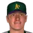
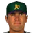
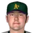
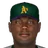
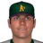
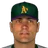
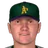
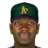
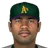
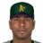

American Baseball League · Eastern Conference
New Orleans Athletics
20-20 .500 · 3rd in Eastern Conference, 3 GB
Run differential -13 (231 RS, 244 RA) · Pythagorean 19-21 · L10 5-5 · Streak W1 · Home 10-7 · Road 10-13
Athletics FIeld (capacity 36,000)
PO Playoff (quarterfinal) pace
High Minors:  Birmingham Barons · Low Minors:
Birmingham Barons · Low Minors:  LSU Tigers
LSU Tigers
Season so far games over .500 by date
Recent results
Roster (32)
| # | Player | Pos | B/T | Age |
|---|---|---|---|---|
| 17 | Casey Fossum | SP | L/L | 24 |
| 37 | SP | R/R | 27 | |
| 9 | Aaron Myette | SP | R/R | 24 |
| 52 |  Roberto Ramirez | SP | L/L | 29 |
| 34 | SP | R/R | 24 | |
| 55 |  Danys Baez | RP | R/R | 24 |
| 50 | Dave Coggin | RP | R/R | 25 |
| 5 |  Brian Falkenborg | RP | R/R | 24 |
| 40 | Chad Fox | RP | R/R | 31 |
| 20 | Chad Paronto | RP | R/R | 26 |
| 32 | Matt Wise | RP | R/R | 26 |
| 46 |  Ray King | CL | L/L | 28 |
| 84 | C | L/R | 29 | |
| 15 | Wiki Gonzalez | C | R/R | 27 |
| 30 | 1B | L/R | 27 | |
| 26 | 1B | S/L | 21 | |
| 18 | 1B | L/R | 22 | |
| 11 |  Brian Roberts | 2B | S/R | 24 |
| 16 | Andy Fox | 3B | L/R | 31 |
| 92 | 3B | L/R | 27 | |
| 27 |  Tim Bogar | SS | R/R | 35 |
| 1 | SS | R/R | 26 | |
| 81 |  Stubby Clapp | LF | L/R | 29 |
| 85 | LF | L/L | 21 | |
| 7 |  Eric Young IL-60 | LF | R/R | 34 |
| 7 | Eric Young IL-60 | LF | R/R | 34 |
| 3 | CF | R/R | 21 | |
| 24 |  Ruben Rivera IL | CF | R/R | 28 |
| 24 | Ruben Rivera IL | CF | R/R | 28 |
| 19 |  Bernie Williams IL | CF | S/R | 33 |
| 19 | Bernie Williams IL | CF | S/R | 33 |
| 43 | Raul Mondesi | RF | R/R | 31 |
2002 batting
| Player | G | PA | AB | R | H | 2B | 3B | HR | RBI | BB | K | SB | AVG | OBP | SLG | OPS |
|---|---|---|---|---|---|---|---|---|---|---|---|---|---|---|---|---|
| Nick Swisher | 39 | 176 | 144 | 29 | 41 | 10 | 1 | 7 | 35 | 28 | 30 | 2 | .285 | .403 | .514 | .917 |
| Raul Mondesi | 38 | 175 | 160 | 36 | 52 | 6 | 1 | 8 | 25 | 13 | 29 | 1 | .325 | .377 | .525 | .902 |
| Eric Young | 37 | 170 | 149 | 25 | 45 | 11 | 0 | 1 | 16 | 19 | 15 | 7 | .302 | .382 | .396 | .778 |
| Bernie Williams | 31 | 145 | 121 | 16 | 38 | 10 | 0 | 1 | 16 | 21 | 15 | 1 | .314 | .421 | .421 | .842 |
| Brian Roberts | 30 | 143 | 131 | 24 | 30 | 7 | 1 | 2 | 23 | 9 | 18 | 6 | .229 | .273 | .344 | .616 |
| Tim Bogar | 37 | 136 | 115 | 19 | 23 | 3 | 2 | 2 | 11 | 16 | 17 | 0 | .200 | .299 | .313 | .612 |
| Wiki Gonzalez | 32 | 134 | 123 | 8 | 35 | 5 | 0 | 1 | 19 | 10 | 19 | 0 | .285 | .343 | .350 | .693 |
| Andy Fox | 33 | 132 | 123 | 19 | 38 | 9 | 2 | 1 | 14 | 7 | 16 | 6 | .309 | .356 | .439 | .795 |
| Ruben Rivera | 25 | 102 | 91 | 11 | 22 | 8 | 1 | 1 | 17 | 7 | 19 | 3 | .242 | .307 | .385 | .692 |
| Laynce Nix | 28 | 97 | 90 | 18 | 24 | 7 | 2 | 2 | 14 | 4 | 20 | 1 | .267 | .309 | .456 | .765 |
| Stubby Clapp | 20 | 44 | 40 | 7 | 14 | 2 | 0 | 0 | 7 | 4 | 4 | 0 | .350 | .409 | .400 | .809 |
| Alex Andreopoulos | 11 | 36 | 34 | 4 | 12 | 3 | 0 | 0 | 4 | 1 | 5 | 0 | .353 | .389 | .441 | .830 |
| Corey Koskie | 8 | 35 | 32 | 5 | 15 | 5 | 0 | 0 | 5 | 3 | 5 | 3 | .469 | .514 | .625 | 1.139 |
| Efren Espinoza | 8 | 30 | 27 | 4 | 6 | 1 | 0 | 0 | 2 | 1 | 7 | 2 | .222 | .300 | .259 | .559 |
| Calvin Murray | 8 | 29 | 21 | 1 | 4 | 2 | 0 | 0 | 3 | 7 | 2 | 0 | .190 | .379 | .286 | .665 |
| Fabian Lopez | 7 | 20 | 18 | 3 | 6 | 1 | 0 | 0 | 1 | 2 | 2 | 0 | .333 | .400 | .389 | .789 |
| Tony Torcato | 10 | 12 | 12 | 2 | 7 | 1 | 0 | 1 | 2 | 0 | 1 | 1 | .583 | .583 | .917 | 1.500 |
| Kenny Kelly | 5 | 9 | 9 | 0 | 0 | 0 | 0 | 0 | 1 | 0 | 2 | 0 | .000 | .000 | .000 | .000 |
| Team | 40 | 1625 | 1440 | 231 | 412 | 91 | 10 | 27 | 215 | 152 | 226 | 33 | .286 | .358 | .419 | .778 |
2002 batting, advanced
| Player | PA | AVG | OBP | SLG | OPS+ | ISO | BABIP | BB% | K% | WPA | UBR | WAR |
|---|---|---|---|---|---|---|---|---|---|---|---|---|
| Nick Swisher | 176 | .285 | .403 | .514 | 126 | .229 | .312 | 15.9% | 17.0% | 1.57 | -0.4 | 0.7 |
| Raul Mondesi | 175 | .325 | .377 | .525 | 121 | .200 | .355 | 7.4% | 16.6% | 0.27 | -0.3 | 1.0 |
| Eric Young | 170 | .302 | .382 | .396 | 94 | .094 | .328 | 11.2% | 8.8% | 1.15 | -1.2 | 0.0 |
| Bernie Williams | 145 | .314 | .421 | .421 | 110 | .107 | .349 | 14.5% | 10.3% | 1.00 | -1.4 | 0.3 |
| Brian Roberts | 143 | .229 | .273 | .344 | 52 | .115 | .246 | 6.3% | 12.6% | 0.23 | -1.3 | -0.9 |
| Tim Bogar | 136 | .200 | .299 | .313 | 52 | .113 | .214 | 11.8% | 12.5% | -0.58 | -0.6 | 0.0 |
| Wiki Gonzalez | 134 | .285 | .343 | .350 | 73 | .065 | .330 | 7.5% | 14.2% | -0.31 | 0.1 | 0.1 |
| Andy Fox | 132 | .309 | .356 | .439 | 96 | .130 | .349 | 5.3% | 12.1% | 0.14 | -0.8 | 0.3 |
| Ruben Rivera | 102 | .242 | .307 | .385 | 70 | .143 | .292 | 6.9% | 18.6% | 0.88 | 0.4 | 0.1 |
| Laynce Nix | 97 | .267 | .309 | .456 | 87 | .189 | .319 | 4.1% | 20.6% | -0.23 | 0.1 | -0.1 |
| Stubby Clapp | 44 | .350 | .409 | .400 | 102 | .050 | .389 | 9.1% | 9.1% | 0.12 | -1.0 | 0.1 |
| Alex Andreopoulos | 36 | .353 | .389 | .441 | 106 | .088 | .414 | 2.8% | 13.9% | 0.20 | -1.3 | 0.1 |
| Corey Koskie | 35 | .469 | .514 | .625 | 181 | .156 | .556 | 8.6% | 14.3% | 0.30 | -0.6 | 0.6 |
| Efren Espinoza | 30 | .222 | .300 | .259 | 41 | .037 | .300 | 3.3% | 23.3% | -0.07 | 0.3 | 0.1 |
| Calvin Murray | 29 | .190 | .379 | .286 | 69 | .095 | .200 | 24.1% | 6.9% | 0.12 | -0.2 | 0.1 |
| Fabian Lopez | 20 | .333 | .400 | .389 | 97 | .056 | .375 | 10.0% | 10.0% | 0.48 | 0.3 | 0.1 |
| Tony Torcato | 12 | .583 | .583 | .917 | 265 | .333 | .600 | 0.0% | 8.3% | 0.30 | -1.2 | 0.2 |
| Kenny Kelly | 9 | .000 | .000 | .000 | -100 | .000 | .000 | 0.0% | 22.2% | -0.16 | -0.1 | -0.2 |
| Team | 1625 | .286 | .358 | .419 | 92 | .133 | .321 | 9.4% | 13.9% | 5.40 | -9.3 | 2.7 |
2002 pitching
| Pitcher | G | GS | W | L | SV | IP | H | R | ER | BB | K | HR | ERA | WHIP |
|---|---|---|---|---|---|---|---|---|---|---|---|---|---|---|
| Kerry Wood | 9 | 9 | 4 | 2 | 0 | 55.0 | 56 | 33 | 29 | 23 | 46 | 6 | 4.75 | 1.44 |
| Casey Fossum | 8 | 8 | 1 | 4 | 0 | 46.1 | 64 | 36 | 32 | 19 | 45 | 6 | 6.22 | 1.79 |
| Denny Lail | 8 | 8 | 0 | 3 | 0 | 34.2 | 53 | 31 | 31 | 23 | 25 | 6 | 8.05 | 2.19 |
| Aaron Myette | 8 | 8 | 1 | 2 | 0 | 34.0 | 48 | 24 | 23 | 15 | 29 | 4 | 6.09 | 1.85 |
| Roberto Ramirez | 4 | 4 | 0 | 2 | 0 | 14.2 | 25 | 18 | 18 | 3 | 1 | 7 | 11.05 | 1.91 |
| Pablo Ortega | 3 | 3 | 1 | 0 | 0 | 16.1 | 16 | 7 | 7 | 8 | 9 | 4 | 3.86 | 1.47 |
| Dave Coggin | 15 | 0 | 1 | 0 | 2 | 26.1 | 25 | 12 | 9 | 16 | 24 | 0 | 3.08 | 1.56 |
| Chad Paronto | 13 | 0 | 3 | 0 | 0 | 25.1 | 29 | 20 | 20 | 16 | 12 | 1 | 7.11 | 1.78 |
| Brian Falkenborg | 13 | 0 | 1 | 1 | 0 | 24.1 | 33 | 12 | 12 | 7 | 26 | 1 | 4.44 | 1.64 |
| Matt Wise | 12 | 0 | 3 | 0 | 0 | 20.2 | 33 | 18 | 18 | 6 | 17 | 3 | 7.84 | 1.89 |
| Ray King | 16 | 0 | 0 | 1 | 10 | 19.1 | 20 | 5 | 5 | 7 | 14 | 1 | 2.33 | 1.40 |
| Chad Fox | 13 | 0 | 2 | 3 | 0 | 19.0 | 26 | 15 | 15 | 11 | 19 | 3 | 7.11 | 1.95 |
| Danys Baez | 15 | 0 | 3 | 2 | 0 | 17.1 | 20 | 13 | 13 | 12 | 12 | 3 | 6.75 | 1.85 |
| Tony Torcato | 1 | 0 | 0 | 0 | 0 | 1.0 | 0 | 0 | 0 | 1 | 0 | 0 | 0.00 | 1.00 |
| Team | 40 | 40 | 20 | 20 | 12 | 354.1 | 448 | 244 | 232 | 167 | 279 | 45 | 5.89 | 1.74 |
2002 pitching, advanced
| Pitcher | IP | ERA | WHIP | K/9 | BB/9 | HR/9 | K% | BB% | K-BB% | FIP | ERA+ | GB% | WPA | WAR |
|---|---|---|---|---|---|---|---|---|---|---|---|---|---|---|
| Kerry Wood | 55.0 | 4.75 | 1.44 | 7.5 | 3.8 | 1.0 | 18.7% | 9.3% | 9.3% | 5.01 | 108 | 43.8% | -0.31 | 0.7 |
| Casey Fossum | 46.1 | 6.22 | 1.79 | 8.7 | 3.7 | 1.2 | 20.3% | 8.6% | 11.7% | 4.71 | 83 | 52.2% | -1.40 | 0.7 |
| Denny Lail | 34.2 | 8.05 | 2.19 | 6.5 | 6.0 | 1.6 | 14.6% | 13.5% | 1.2% | 6.65 | 64 | 53.7% | -1.19 | -0.1 |
| Aaron Myette | 34.0 | 6.09 | 1.85 | 7.7 | 4.0 | 1.1 | 18.0% | 9.3% | 8.7% | 4.91 | 84 | 44.8% | -0.23 | 0.5 |
| Roberto Ramirez | 14.2 | 11.05 | 1.91 | 0.6 | 1.8 | 4.3 | 1.4% | 4.2% | -2.8% | 10.36 | 46 | 47.6% | -0.59 | -0.5 |
| Pablo Ortega | 16.1 | 3.86 | 1.47 | 5.0 | 4.4 | 2.2 | 12.7% | 11.3% | 1.4% | 7.23 | 133 | 63.2% | 0.10 | -0.1 |
| Dave Coggin | 26.1 | 3.08 | 1.56 | 8.2 | 5.5 | 0.0 | 20.2% | 13.4% | 6.7% | 3.91 | 167 | 58.0% | 0.29 | 0.4 |
| Chad Paronto | 25.1 | 7.11 | 1.78 | 4.3 | 5.7 | 0.4 | 10.3% | 13.8% | -3.4% | 5.14 | 72 | 56.1% | -0.06 | 0.0 |
| Brian Falkenborg | 24.1 | 4.44 | 1.64 | 9.6 | 2.6 | 0.4 | 23.6% | 6.4% | 17.3% | 2.94 | 116 | 47.7% | -0.62 | 0.6 |
| Matt Wise | 20.2 | 7.84 | 1.89 | 7.4 | 2.6 | 1.3 | 16.7% | 5.9% | 10.8% | 4.94 | 65 | 31.8% | 0.37 | 0.1 |
| Ray King | 19.1 | 2.33 | 1.40 | 6.5 | 3.3 | 0.5 | 16.9% | 8.4% | 8.4% | 3.99 | 220 | 50.0% | -0.01 | 0.4 |
| Chad Fox | 19.0 | 7.11 | 1.95 | 9.0 | 5.2 | 1.4 | 20.7% | 12.0% | 8.7% | 5.63 | 72 | 42.9% | -1.59 | -0.1 |
| Danys Baez | 17.1 | 6.75 | 1.85 | 6.2 | 6.2 | 1.6 | 14.3% | 14.3% | 0.0% | 7.31 | 76 | 44.4% | -0.75 | -0.4 |
| Tony Torcato | 1.0 | 0.00 | 1.00 | 0.0 | 9.0 | 0.0 | 0.0% | 25.0% | -25.0% | 6.68 | - | 0.0% | 0.00 | 0.0 |
| Team | 354.1 | 5.89 | 1.74 | 7.1 | 4.2 | 1.1 | 16.9% | 10.1% | 6.8% | 5.32 | 87 | 48.7% | -5.98 | 2.1 |
2002 fielding
| Player | Pos | G | GS | Inn | TC | PO | A | E | DP | FPct | ZR | Arm | Framing |
|---|---|---|---|---|---|---|---|---|---|---|---|---|---|
| Oscar Henriquez | P | 60 | 0 | 480.0 | 11 | 5 | 4 | 2 | 0 | .818 | 0.0 | - | - |
| Valdes Barrios | P | 57 | 0 | 456.0 | 22 | 6 | 16 | 0 | 0 | 1.000 | 0.0 | - | - |
| Brian Shouse | P | 56 | 1 | 448.0 | 8 | 1 | 7 | 0 | 0 | 1.000 | 0.0 | - | - |
| Roberto Rivera | P | 54 | 0 | 432.0 | 17 | 5 | 10 | 2 | 2 | .882 | 0.0 | - | - |
| Jeff Tabaka | P | 53 | 0 | 424.0 | 10 | 2 | 7 | 1 | 1 | .900 | 0.0 | - | - |
| Jim Mann | P | 53 | 0 | 424.0 | 12 | 5 | 7 | 0 | 0 | 1.000 | 0.0 | - | - |
| Reggie Harris | P | 51 | 0 | 408.0 | 9 | 4 | 3 | 2 | 1 | .778 | 0.0 | - | - |
| Ron Rightnowar | P | 51 | 2 | 408.0 | 16 | 2 | 14 | 0 | 2 | 1.000 | 0.0 | - | - |
| Ricky Stone | P | 51 | 8 | 408.0 | 23 | 8 | 15 | 0 | 5 | 1.000 | 0.0 | - | - |
| Steve Wilson | P | 51 | 3 | 408.0 | 9 | 4 | 5 | 0 | 0 | 1.000 | 0.0 | - | - |
| Garland Kiser | P | 50 | 4 | 400.0 | 7 | 2 | 5 | 0 | 1 | 1.000 | 0.0 | - | - |
| Scott Linebrink | P | 50 | 0 | 400.0 | 12 | 1 | 10 | 1 | 1 | .917 | 0.0 | - | - |
| Rick Huisman | P | 48 | 0 | 384.0 | 8 | 2 | 6 | 0 | 0 | 1.000 | 0.0 | - | - |
| Wayne Franklin | P | 48 | 0 | 384.0 | 7 | 2 | 5 | 0 | 0 | 1.000 | 0.0 | - | - |
| Mark Hutton | P | 46 | 0 | 368.0 | 13 | 4 | 9 | 0 | 2 | 1.000 | 0.0 | - | - |
| Johan Lopez | P | 45 | 6 | 360.0 | 15 | 5 | 10 | 0 | 0 | 1.000 | 0.0 | - | - |
| Wayne Franklin | P | 41 | 0 | 328.0 | 10 | 5 | 4 | 1 | 0 | .900 | 0.0 | - | - |
| Cris Carpenter | P | 40 | 0 | 320.0 | 23 | 6 | 16 | 1 | 1 | .957 | 0.0 | - | - |
| Jeff McCurry | P | 40 | 0 | 320.0 | 11 | 3 | 7 | 1 | 1 | .909 | 0.0 | - | - |
| Joe Slusarski | P | 40 | 0 | 320.0 | 27 | 8 | 18 | 1 | 1 | .963 | 0.0 | - | - |
| Joe Slusarski | P | 40 | 2 | 320.0 | 12 | 4 | 8 | 0 | 1 | 1.000 | 0.0 | - | - |
| Jim Hunter | P | 39 | 3 | 312.0 | 22 | 3 | 19 | 0 | 3 | 1.000 | 0.0 | - | - |
| Roger Salkeld | P | 37 | 11 | 296.0 | 11 | 4 | 6 | 1 | 0 | .909 | 0.0 | - | - |
| Joe Slusarski | P | 37 | 2 | 296.0 | 10 | 4 | 6 | 0 | 0 | 1.000 | 0.0 | - | - |
| Fernando Hernandez | P | 36 | 1 | 288.0 | 8 | 1 | 5 | 2 | 1 | .750 | 0.0 | - | - |
| Chris George | P | 36 | 0 | 288.0 | 10 | 5 | 5 | 0 | 1 | 1.000 | 0.0 | - | - |
| Kent Wallace | P | 36 | 1 | 288.0 | 5 | 2 | 3 | 0 | 0 | 1.000 | 0.0 | - | - |
| Rick Huisman | P | 35 | 0 | 280.0 | 8 | 3 | 4 | 1 | 0 | .875 | 0.0 | - | - |
| Paul Swingle | P | 35 | 0 | 280.0 | 5 | 4 | 1 | 0 | 0 | 1.000 | 0.0 | - | - |
| Mike Ignasiak | P | 35 | 0 | 280.0 | 13 | 3 | 9 | 1 | 0 | .923 | 0.0 | - | - |
| Mike Thomas | P | 35 | 0 | 280.0 | 20 | 5 | 14 | 1 | 1 | .950 | 0.0 | - | - |
| Dean Crow | P | 34 | 0 | 272.0 | 10 | 2 | 8 | 0 | 0 | 1.000 | 0.0 | - | - |
| Stacy Jones | P | 34 | 0 | 272.0 | 7 | 4 | 3 | 0 | 0 | 1.000 | 0.0 | - | - |
| Mike Grzanich | P | 34 | 0 | 272.0 | 6 | 3 | 2 | 1 | 0 | .833 | 0.0 | - | - |
| Rusty Meacham | P | 33 | 4 | 264.0 | 16 | 2 | 14 | 0 | 0 | 1.000 | 0.0 | - | - |
| J.D. Arteaga | P | 32 | 21 | 256.0 | 30 | 9 | 20 | 1 | 1 | .967 | 0.0 | - | - |
| Jose Cabrera | P | 31 | 0 | 248.0 | 8 | 3 | 4 | 1 | 0 | .875 | 0.0 | - | - |
| Joe Slusarski | P | 31 | 0 | 248.0 | 11 | 4 | 7 | 0 | 0 | 1.000 | 0.0 | - | - |
| Joe Slusarski | P | 31 | 0 | 248.0 | 19 | 5 | 13 | 1 | 1 | .947 | 0.0 | - | - |
| Marval Kiefer | P | 30 | 17 | 240.0 | 23 | 9 | 13 | 1 | 2 | .957 | 0.0 | - | - |
| Bronswell Patrick | P | 30 | 12 | 240.0 | 21 | 7 | 14 | 0 | 3 | 1.000 | 0.0 | - | - |
| Locklear Boze | P | 29 | 29 | 232.0 | 28 | 8 | 19 | 1 | 1 | .964 | 0.0 | - | - |
| Trever Miller | P | 29 | 27 | 232.0 | 17 | 4 | 12 | 1 | 1 | .941 | 0.0 | - | - |
| Steve Sparks | P | 29 | 28 | 232.0 | 5 | 1 | 4 | 0 | 0 | 1.000 | 0.0 | - | - |
| Bob Milacki | P | 29 | 28 | 232.0 | 5 | 2 | 3 | 0 | 0 | 1.000 | 0.0 | - | - |
| Matt Maysey | P | 29 | 5 | 232.0 | 5 | 3 | 2 | 0 | 0 | 1.000 | 0.0 | - | - |
| Brian Givens | P | 29 | 22 | 232.0 | 33 | 11 | 19 | 3 | 2 | .909 | 0.0 | - | - |
| Brian Sikorski | P | 28 | 27 | 224.0 | 5 | 1 | 4 | 0 | 0 | 1.000 | 0.0 | - | - |
| C.J. Nitkowski | P | 28 | 28 | 224.0 | 16 | 4 | 11 | 1 | 1 | .938 | 0.0 | - | - |
| Steve Sparks | P | 28 | 27 | 224.0 | 6 | 2 | 4 | 0 | 1 | 1.000 | 0.0 | - | - |
| Scott Taylor | P | 28 | 27 | 224.0 | 36 | 4 | 30 | 2 | 4 | .944 | 0.0 | - | - |
| Travis Driskill | P | 28 | 28 | 224.0 | 23 | 5 | 17 | 1 | 2 | .957 | 0.0 | - | - |
| Travis Driskill | P | 28 | 28 | 224.0 | 29 | 10 | 16 | 3 | 1 | .897 | 0.0 | - | - |
| Stacy Jones | P | 28 | 0 | 224.0 | 4 | 3 | 1 | 0 | 0 | 1.000 | 0.0 | - | - |
| Bob Scanlan | P | 28 | 28 | 224.0 | 16 | 4 | 11 | 1 | 1 | .938 | 0.0 | - | - |
| Mark Guerra | P | 28 | 15 | 224.0 | 26 | 11 | 15 | 0 | 5 | 1.000 | 0.0 | - | - |
| Robert Ellis | P | 27 | 27 | 216.0 | 16 | 4 | 11 | 1 | 1 | .938 | 0.0 | - | - |
| Jamie McAndrew | P | 27 | 25 | 216.0 | 32 | 15 | 16 | 1 | 2 | .969 | 0.0 | - | - |
| Wade Miller | P | 26 | 26 | 208.0 | 26 | 5 | 21 | 0 | 3 | 1.000 | 0.0 | - | - |
| John Halama | P | 26 | 24 | 208.0 | 5 | 1 | 4 | 0 | 0 | 1.000 | 0.0 | - | - |
| Locklear Boze | P | 25 | 2 | 200.0 | 10 | 5 | 5 | 0 | 0 | 1.000 | 0.0 | - | - |
| Kip Gross | P | 25 | 25 | 200.0 | 15 | 4 | 10 | 1 | 1 | .933 | 0.0 | - | - |
| Ron Rightnowar | P | 25 | 0 | 200.0 | 11 | 4 | 7 | 0 | 1 | 1.000 | 0.0 | - | - |
| Jose Mercedes | P | 25 | 15 | 200.0 | 24 | 16 | 7 | 1 | 0 | .958 | 0.0 | - | - |
| Dave Evans | P | 25 | 7 | 200.0 | 5 | 0 | 3 | 2 | 1 | .600 | 0.0 | - | - |
| Scott Taylor | P | 24 | 21 | 192.0 | 29 | 12 | 17 | 0 | 1 | 1.000 | 0.0 | - | - |
| Brian Powell | P | 24 | 23 | 192.0 | 26 | 11 | 12 | 3 | 1 | .885 | 0.0 | - | - |
| Locklear Boze | P | 23 | 19 | 184.0 | 20 | 9 | 11 | 0 | 3 | 1.000 | 0.0 | - | - |
| Blas Minor | P | 23 | 0 | 184.0 | 12 | 1 | 10 | 1 | 2 | .917 | 0.0 | - | - |
| Mike Misuraca | P | 23 | 12 | 184.0 | 22 | 7 | 13 | 2 | 1 | .909 | 0.0 | - | - |
| Marval Kiefer | P | 21 | 21 | 168.0 | 12 | 3 | 8 | 1 | 1 | .917 | 0.0 | - | - |
| Howard Farmer | P | 20 | 13 | 160.0 | 12 | 2 | 10 | 0 | 0 | 1.000 | 0.0 | - | - |
| Rafael Novoa | P | 20 | 18 | 160.0 | 17 | 3 | 11 | 3 | 1 | .824 | 0.0 | - | - |
| Tony Phillips | P | 20 | 6 | 160.0 | 8 | 3 | 4 | 1 | 2 | .875 | 0.0 | - | - |
| Kevin Hodges | P | 19 | 17 | 152.0 | 3 | 1 | 2 | 0 | 0 | 1.000 | 0.0 | - | - |
| John Hudek | P | 19 | 0 | 152.0 | 12 | 3 | 8 | 1 | 1 | .917 | 0.0 | - | - |
| Tony McKnight | P | 19 | 19 | 152.0 | 23 | 5 | 16 | 2 | 1 | .913 | 0.0 | - | - |
| David West | P | 19 | 2 | 152.0 | 3 | 0 | 3 | 0 | 0 | 1.000 | 0.0 | - | - |
| Hancock Burrows | P | 18 | 0 | 144.0 | 9 | 4 | 3 | 2 | 1 | .778 | 0.0 | - | - |
| Tony McKnight | P | 18 | 18 | 144.0 | 18 | 8 | 9 | 1 | 0 | .944 | 0.0 | - | - |
| Brian Powell | P | 18 | 18 | 144.0 | 13 | 2 | 10 | 1 | 1 | .923 | 0.0 | - | - |
| John Halama | P | 17 | 17 | 136.0 | 3 | 1 | 2 | 0 | 0 | 1.000 | 0.0 | - | - |
| Jamie McAndrew | P | 17 | 17 | 136.0 | 10 | 2 | 7 | 1 | 1 | .900 | 0.0 | - | - |
| Barry Jones | P | 17 | 0 | 136.0 | 8 | 2 | 5 | 1 | 0 | .875 | 0.0 | - | - |
| Rusty Meacham | P | 17 | 5 | 136.0 | 10 | 3 | 7 | 0 | 1 | 1.000 | 0.0 | - | - |
| Donne Wall | P | 17 | 17 | 136.0 | 10 | 2 | 7 | 1 | 1 | .900 | 0.0 | - | - |
| Mike Magnante | P | 17 | 0 | 136.0 | 12 | 4 | 8 | 0 | 0 | 1.000 | 0.0 | - | - |
| Wade Miller | P | 16 | 15 | 128.0 | 4 | 1 | 3 | 0 | 0 | 1.000 | 0.0 | - | - |
| Brian Givens | P | 16 | 11 | 128.0 | 15 | 3 | 10 | 2 | 0 | .867 | 0.0 | - | - |
| Brian Sikorski | P | 15 | 14 | 120.0 | 18 | 8 | 10 | 0 | 0 | 1.000 | 0.0 | - | - |
| Scott Karl | P | 15 | 13 | 120.0 | 0 | 0 | 0 | 0 | 0 | - | 0.0 | - | - |
| Scott Elarton | P | 14 | 14 | 112.0 | 17 | 4 | 11 | 2 | 0 | .882 | 0.0 | - | - |
| Bob Scanlan | P | 14 | 12 | 112.0 | 14 | 7 | 6 | 1 | 0 | .929 | 0.0 | - | - |
| Tony Mounce | P | 14 | 0 | 112.0 | 9 | 2 | 6 | 1 | 1 | .889 | 0.0 | - | - |
| Dane Johnson | P | 13 | 0 | 104.0 | 3 | 1 | 2 | 0 | 0 | 1.000 | 0.0 | - | - |
| Tommy Greene | P | 13 | 13 | 104.0 | 7 | 2 | 5 | 0 | 0 | 1.000 | 0.0 | - | - |
| Doug Jones | P | 13 | 0 | 104.0 | 6 | 3 | 3 | 0 | 0 | 1.000 | 0.0 | - | - |
| Joe Slusarski | P | 13 | 0 | 104.0 | 2 | 1 | 1 | 0 | 0 | 1.000 | 0.0 | - | - |
| Frankie Rodriguez | P | 13 | 1 | 104.0 | 7 | 1 | 5 | 1 | 1 | .857 | 0.0 | - | - |
| Marval Kiefer | P | 12 | 12 | 96.0 | 7 | 2 | 5 | 0 | 0 | 1.000 | 0.0 | - | - |
| Jose Cabrera | P | 12 | 0 | 96.0 | 3 | 0 | 3 | 0 | 0 | 1.000 | 0.0 | - | - |
| Chris Eddy | P | 12 | 0 | 96.0 | 3 | 0 | 3 | 0 | 0 | 1.000 | 0.0 | - | - |
| Pat Combs | P | 12 | 2 | 96.0 | 7 | 2 | 5 | 0 | 0 | 1.000 | 0.0 | - | - |
| Carlos Maldonado | P | 12 | 0 | 96.0 | 7 | 2 | 5 | 0 | 0 | 1.000 | 0.0 | - | - |
| Edgar Ramos | P | 12 | 12 | 96.0 | 2 | 1 | 1 | 0 | 0 | 1.000 | 0.0 | - | - |
| Scott Taylor | P | 12 | 8 | 96.0 | 13 | 4 | 9 | 0 | 2 | 1.000 | 0.0 | - | - |
| Ramon Garcia | P | 11 | 5 | 88.0 | 9 | 1 | 8 | 0 | 0 | 1.000 | 0.0 | - | - |
| Josias Manzanillo | P | 11 | 0 | 88.0 | 10 | 3 | 6 | 1 | 0 | .900 | 0.0 | - | - |
| Alvin Morman | P | 11 | 0 | 88.0 | 3 | 0 | 3 | 0 | 0 | 1.000 | 0.0 | - | - |
| Frank Seminara | P | 11 | 7 | 88.0 | 7 | 2 | 2 | 3 | 0 | .571 | 0.0 | - | - |
| Steve Sparks | P | 11 | 10 | 88.0 | 12 | 5 | 7 | 0 | 1 | 1.000 | 0.0 | - | - |
| Mike Potts | P | 11 | 1 | 88.0 | 8 | 2 | 5 | 1 | 0 | .875 | 0.0 | - | - |
| Mike Gardiner | P | 11 | 4 | 88.0 | 9 | 5 | 4 | 0 | 0 | 1.000 | 0.0 | - | - |
| Rene Arocha | P | 11 | 11 | 88.0 | 13 | 1 | 12 | 0 | 1 | 1.000 | 0.0 | - | - |
| Doug Henry | P | 10 | 0 | 80.0 | 3 | 0 | 3 | 0 | 1 | 1.000 | 0.0 | - | - |
| Lee Smith | P | 10 | 0 | 80.0 | 2 | 2 | 0 | 0 | 0 | 1.000 | 0.0 | - | - |
| Jason Green | P | 10 | 0 | 80.0 | 3 | 3 | 0 | 0 | 0 | 1.000 | 0.0 | - | - |
| McGarvey Shinall | P | 9 | 0 | 72.0 | 3 | 1 | 2 | 0 | 0 | 1.000 | 0.0 | - | - |
| Scott Elarton | P | 9 | 9 | 72.0 | 11 | 5 | 5 | 1 | 0 | .909 | 0.0 | - | - |
| Angel Miranda | P | 9 | 2 | 72.0 | 4 | 0 | 4 | 0 | 0 | 1.000 | 0.0 | - | - |
| Jeriome Robertson | P | 9 | 9 | 72.0 | 8 | 0 | 8 | 0 | 0 | 1.000 | 0.0 | - | - |
| Scott Taylor | P | 9 | 6 | 72.0 | 6 | 1 | 5 | 0 | 1 | 1.000 | 0.0 | - | - |
| Brian Powell | P | 9 | 9 | 72.0 | 5 | 1 | 4 | 0 | 0 | 1.000 | 0.0 | - | - |
| Mark Guerra | P | 9 | 8 | 72.0 | 9 | 3 | 6 | 0 | 0 | 1.000 | 0.0 | - | - |
| Wise Sutko | P | 8 | 0 | 64.0 | 4 | 2 | 2 | 0 | 0 | 1.000 | 0.0 | - | - |
| Elliott Anderson | P | 8 | 3 | 64.0 | 7 | 3 | 4 | 0 | 0 | 1.000 | 0.0 | - | - |
| Jim Austin | P | 8 | 3 | 64.0 | 4 | 1 | 3 | 0 | 0 | 1.000 | 0.0 | - | - |
| Kevin Wickander | P | 8 | 0 | 64.0 | 2 | 0 | 0 | 2 | 0 | .000 | 0.0 | - | - |
| Scott Karl | P | 8 | 6 | 64.0 | 4 | 1 | 3 | 0 | 0 | 1.000 | 0.0 | - | - |
| Mike Ignasiak | P | 8 | 2 | 64.0 | 5 | 2 | 3 | 0 | 0 | 1.000 | 0.0 | - | - |
| Eric Nolte | P | 7 | 0 | 56.0 | 2 | 0 | 2 | 0 | 0 | 1.000 | 0.0 | - | - |
| Tim Van Egmond | P | 7 | 7 | 56.0 | 4 | 1 | 3 | 0 | 0 | 1.000 | 0.0 | - | - |
| Mark Small | P | 7 | 0 | 56.0 | 3 | 1 | 2 | 0 | 0 | 1.000 | 0.0 | - | - |
| Freddy Garcia | P | 7 | 7 | 56.0 | 9 | 5 | 4 | 0 | 1 | 1.000 | 0.0 | - | - |
| Kent Wallace | P | 7 | 0 | 56.0 | 1 | 0 | 1 | 0 | 0 | 1.000 | 0.0 | - | - |
| Kerry Wood | P | 9 | 9 | 55.0 | 4 | 2 | 2 | 0 | 0 | 1.000 | -0.3 | - | - |
| Perez Bowen | P | 6 | 6 | 48.0 | 6 | 3 | 3 | 0 | 0 | 1.000 | 0.0 | - | - |
| Cal Eldred | P | 6 | 6 | 48.0 | 5 | 3 | 2 | 0 | 1 | 1.000 | 0.0 | - | - |
| Tim Redding | P | 6 | 6 | 48.0 | 3 | 1 | 2 | 0 | 0 | 1.000 | 0.0 | - | - |
| Casey Fossum | P | 8 | 8 | 46.1 | 3 | 1 | 2 | 0 | 0 | 1.000 | -1.2 | - | - |
| Marval Kiefer | P | 5 | 5 | 40.0 | 3 | 1 | 2 | 0 | 0 | 1.000 | 0.0 | - | - |
| Jose Cabrera | P | 5 | 0 | 40.0 | 2 | 2 | 0 | 0 | 0 | 1.000 | 0.0 | - | - |
| C.J. Nitkowski | P | 5 | 3 | 40.0 | 3 | 0 | 2 | 1 | 0 | .667 | 0.0 | - | - |
| Hector Ramirez | P | 5 | 0 | 40.0 | 3 | 1 | 2 | 0 | 0 | 1.000 | 0.0 | - | - |
| Roy Oswalt | P | 5 | 5 | 40.0 | 3 | 1 | 2 | 0 | 0 | 1.000 | 0.0 | - | - |
| Aaron Myette | P | 8 | 8 | 34.0 | 6 | 2 | 3 | 1 | 0 | .833 | -0.3 | - | - |
| Denny Lail | P | 8 | 8 | 34.2 | 3 | 1 | 2 | 0 | 0 | 1.000 | 1.2 | - | - |
| Ron Rightnowar | P | 4 | 0 | 32.0 | 2 | 1 | 1 | 0 | 0 | 1.000 | 0.0 | - | - |
| Sid Roberson | P | 4 | 3 | 32.0 | 2 | 1 | 1 | 0 | 0 | 1.000 | 0.0 | - | - |
| Mike Ignasiak | P | 4 | 2 | 32.0 | 2 | 0 | 2 | 0 | 0 | 1.000 | 0.0 | - | - |
| Brian Maxcy | P | 4 | 1 | 32.0 | 3 | 1 | 2 | 0 | 0 | 1.000 | 0.0 | - | - |
| Rob Dibble | P | 4 | 0 | 32.0 | 1 | 1 | 0 | 0 | 0 | 1.000 | 0.0 | - | - |
| Dave Coggin | P | 15 | 0 | 26.1 | 3 | 0 | 3 | 0 | 0 | 1.000 | 0.4 | - | - |
| Chad Paronto | P | 13 | 0 | 25.1 | 1 | 0 | 1 | 0 | 0 | 1.000 | -0.4 | - | - |
| Sean Bergman | P | 3 | 1 | 24.0 | 2 | 1 | 1 | 0 | 0 | 1.000 | 0.0 | - | - |
| Paul McClellan | P | 3 | 3 | 24.0 | 2 | 1 | 1 | 0 | 0 | 1.000 | 0.0 | - | - |
| Angel Miranda | P | 3 | 3 | 24.0 | 1 | 0 | 1 | 0 | 0 | 1.000 | 0.0 | - | - |
| Brian Falkenborg | P | 13 | 0 | 24.1 | 3 | 1 | 2 | 0 | 0 | 1.000 | 0.2 | - | - |
| Jose Mercedes | P | 3 | 3 | 24.0 | 0 | 0 | 0 | 0 | 0 | - | 0.0 | - | - |
| Bob Scanlan | P | 3 | 3 | 24.0 | 1 | 1 | 0 | 0 | 0 | 1.000 | 0.0 | - | - |
| Doug Henry | P | 3 | 3 | 24.0 | 1 | 0 | 1 | 0 | 0 | 1.000 | 0.0 | - | - |
| Teddy Higuera | P | 3 | 3 | 24.0 | 2 | 0 | 2 | 0 | 0 | 1.000 | 0.0 | - | - |
| Mike Carter | P | 3 | 0 | 24.0 | 1 | 0 | 1 | 0 | 0 | 1.000 | 0.0 | - | - |
| Matt Wise | P | 12 | 0 | 20.2 | 3 | 1 | 2 | 0 | 0 | 1.000 | -1.0 | - | - |
| Chad Fox | P | 13 | 0 | 19.0 | 2 | 0 | 2 | 0 | 0 | 1.000 | 0.3 | - | - |
| Ray King | P | 16 | 0 | 19.1 | 2 | 0 | 2 | 0 | 0 | 1.000 | -0.6 | - | - |
| Danys Baez | P | 15 | 0 | 17.1 | 1 | 1 | 0 | 0 | 0 | 1.000 | 0.2 | - | - |
| J.R. Phillips | P | 2 | 0 | 16.0 | 1 | 0 | 1 | 0 | 0 | 1.000 | 0.0 | - | - |
| J.R. Phillips | P | 2 | 0 | 16.0 | 1 | 0 | 1 | 0 | 0 | 1.000 | 0.0 | - | - |
| Doug Brocail | P | 2 | 0 | 16.0 | 2 | 1 | 1 | 0 | 0 | 1.000 | 0.0 | - | - |
| Scott Elarton | P | 2 | 2 | 16.0 | 1 | 0 | 1 | 0 | 0 | 1.000 | 0.0 | - | - |
| Todd Haney | P | 2 | 0 | 16.0 | 1 | 0 | 1 | 0 | 0 | 1.000 | 0.0 | - | - |
| Heath Haynes | P | 2 | 0 | 16.0 | 1 | 0 | 1 | 0 | 0 | 1.000 | 0.0 | - | - |
| Sid Roberson | P | 2 | 2 | 16.0 | 1 | 0 | 1 | 0 | 0 | 1.000 | 0.0 | - | - |
| Scott Pose | P | 2 | 0 | 16.0 | 1 | 0 | 1 | 0 | 0 | 1.000 | 0.0 | - | - |
| Jeff Bronkey | P | 2 | 1 | 16.0 | 1 | 0 | 1 | 0 | 0 | 1.000 | 0.0 | - | - |
| Jay Powell | P | 2 | 1 | 16.0 | 1 | 0 | 1 | 0 | 0 | 1.000 | 0.0 | - | - |
| Russ Johnson | P | 2 | 0 | 16.0 | 1 | 0 | 1 | 0 | 0 | 1.000 | 0.0 | - | - |
| Russ Johnson | P | 2 | 0 | 16.0 | 1 | 0 | 1 | 0 | 0 | 1.000 | 0.0 | - | - |
| Russ Johnson | P | 2 | 0 | 16.0 | 1 | 0 | 1 | 0 | 0 | 1.000 | 0.0 | - | - |
| Sid Fernandez | P | 2 | 2 | 16.0 | 1 | 0 | 1 | 0 | 0 | 1.000 | 0.0 | - | - |
| Clay Parker | P | 2 | 0 | 16.0 | 1 | 1 | 0 | 0 | 0 | 1.000 | 0.0 | - | - |
| Mike Stefanski | P | 2 | 0 | 16.0 | 1 | 0 | 1 | 0 | 0 | 1.000 | 0.0 | - | - |
| Pablo Ortega | P | 3 | 3 | 16.1 | 5 | 0 | 4 | 1 | 1 | .800 | -0.5 | - | - |
| Roberto Ramirez | P | 4 | 4 | 14.2 | 1 | 0 | 1 | 0 | 0 | 1.000 | 0.5 | - | - |
| Ryan American Baseball League | P | 1 | 0 | 8.0 | 0 | 0 | 0 | 0 | 0 | - | 0.0 | - | - |
| Ryan American Baseball League | P | 1 | 0 | 8.0 | 1 | 1 | 0 | 0 | 0 | 1.000 | 0.0 | - | - |
| Bates High Minors | P | 1 | 0 | 8.0 | 0 | 0 | 0 | 0 | 0 | - | 0.0 | - | - |
| Williams Jaha | P | 1 | 0 | 8.0 | 0 | 0 | 0 | 0 | 0 | - | 0.0 | - | - |
| Williams Jaha | P | 1 | 0 | 8.0 | 0 | 0 | 0 | 0 | 0 | - | 0.0 | - | - |
| Groff Housie | P | 1 | 0 | 8.0 | 0 | 0 | 0 | 0 | 0 | - | 0.0 | - | - |
| Perez Lukachyk | P | 1 | 0 | 8.0 | 0 | 0 | 0 | 0 | 0 | - | 0.0 | - | - |
| Melvin Mora | P | 1 | 0 | 8.0 | 0 | 0 | 0 | 0 | 0 | - | 0.0 | - | - |
| Wise Sutko | P | 1 | 0 | 8.0 | 0 | 0 | 0 | 0 | 0 | - | 0.0 | - | - |
| Chris Truby | P | 1 | 0 | 8.0 | 0 | 0 | 0 | 0 | 0 | - | 0.0 | - | - |
| Tim Unroe | P | 1 | 0 | 8.0 | 0 | 0 | 0 | 0 | 0 | - | 0.0 | - | - |
| Tim Unroe | P | 1 | 0 | 8.0 | 0 | 0 | 0 | 0 | 0 | - | 0.0 | - | - |
| Francisco Candaele | P | 1 | 0 | 8.0 | 0 | 0 | 0 | 0 | 0 | - | 0.0 | - | - |
| Ozzie Canseco | P | 1 | 0 | 8.0 | 0 | 0 | 0 | 0 | 0 | - | 0.0 | - | - |
| Josias Manzanillo | P | 1 | 0 | 8.0 | 0 | 0 | 0 | 0 | 0 | - | 0.0 | - | - |
| Mark Loretta | P | 1 | 0 | 8.0 | 0 | 0 | 0 | 0 | 0 | - | 0.0 | - | - |
| Mark Loretta | P | 1 | 0 | 8.0 | 0 | 0 | 0 | 0 | 0 | - | 0.0 | - | - |
| Mark Loretta | P | 1 | 0 | 8.0 | 0 | 0 | 0 | 0 | 0 | - | 0.0 | - | - |
| Alex Diaz | P | 1 | 0 | 8.0 | 0 | 0 | 0 | 0 | 0 | - | 0.0 | - | - |
| Jimmy Kremers | P | 1 | 0 | 8.0 | 0 | 0 | 0 | 0 | 0 | - | 0.0 | - | - |
| Jimmy Kremers | P | 1 | 0 | 8.0 | 0 | 0 | 0 | 0 | 0 | - | 0.0 | - | - |
| Shane Reynolds | P | 1 | 1 | 8.0 | 1 | 0 | 1 | 0 | 0 | 1.000 | 0.0 | - | - |
| Shane Reynolds | P | 1 | 1 | 8.0 | 1 | 1 | 0 | 0 | 0 | 1.000 | 0.0 | - | - |
| Travis Smith | P | 1 | 0 | 8.0 | 1 | 0 | 1 | 0 | 0 | 1.000 | 0.0 | - | - |
| Eddie Williams | P | 1 | 0 | 8.0 | 0 | 0 | 0 | 0 | 0 | - | 0.0 | - | - |
| Kary Bridges | P | 1 | 0 | 8.0 | 0 | 0 | 0 | 0 | 0 | - | 0.0 | - | - |
| Chad Alexander | P | 1 | 0 | 8.0 | 0 | 0 | 0 | 0 | 0 | - | 0.0 | - | - |
| Chad Alexander | P | 1 | 0 | 8.0 | 0 | 0 | 0 | 0 | 0 | - | 0.0 | - | - |
| Tony Mounce | P | 1 | 1 | 8.0 | 1 | 0 | 1 | 0 | 0 | 1.000 | 0.0 | - | - |
| Omar Ramirez | P | 1 | 0 | 8.0 | 0 | 0 | 0 | 0 | 0 | - | 0.0 | - | - |
| Tony Torcato | P | 1 | 0 | 1.0 | 0 | 0 | 0 | 0 | 0 | - | 0.0 | - | - |
| Mitch Meluskey | C | 108 | 85 | 864.0 | 761 | 702 | 49 | 10 | 8 | .987 | -2.6 | 0.0 | 0.0 |
| Raul Chavez | C | 92 | 75 | 736.0 | 631 | 571 | 52 | 8 | 3 | .987 | -0.4 | 0.0 | 0.0 |
| Raul Chavez | C | 82 | 68 | 656.0 | 600 | 533 | 62 | 5 | 10 | .992 | 0.5 | 0.0 | 0.0 |
| Kelly Stinnett | C | 81 | 67 | 648.0 | 543 | 485 | 48 | 10 | 9 | .982 | -0.3 | 0.0 | 0.0 |
| Randy Knorr | C | 72 | 66 | 576.0 | 565 | 502 | 54 | 9 | 7 | .984 | -0.2 | 0.0 | 0.0 |
| George Williams | C | 72 | 55 | 576.0 | 471 | 439 | 26 | 6 | 1 | .987 | 0.6 | 0.0 | 0.0 |
| Mike Stefanski | C | 70 | 47 | 560.0 | 392 | 355 | 35 | 2 | 5 | .995 | -0.7 | 0.0 | 0.0 |
| Randy Knorr | C | 67 | 51 | 536.0 | 435 | 396 | 35 | 4 | 4 | .991 | 0.8 | 0.0 | 0.0 |
| Mike Fitzgerald | C | 65 | 53 | 520.0 | 392 | 362 | 26 | 4 | 8 | .990 | -0.5 | 0.0 | 0.0 |
| Mike Matheny | C | 55 | 48 | 440.0 | 386 | 338 | 43 | 5 | 3 | .987 | -2.2 | 0.0 | 0.0 |
| Frank Charles | C | 53 | 45 | 424.0 | 376 | 336 | 35 | 5 | 3 | .987 | -0.7 | 0.0 | 0.0 |
| Mitch Meluskey | C | 49 | 41 | 392.0 | 353 | 323 | 26 | 4 | 6 | .989 | -0.3 | 0.0 | 0.0 |
| Marc Ronan | C | 46 | 31 | 368.0 | 274 | 252 | 18 | 4 | 4 | .985 | 0.2 | 0.0 | 0.0 |
| Scott Servais | C | 42 | 37 | 336.0 | 323 | 288 | 34 | 1 | 8 | .997 | 0.4 | 0.0 | 0.0 |
| Wise Sutko | C | 39 | 26 | 312.0 | 214 | 192 | 20 | 2 | 2 | .991 | -0.9 | 0.0 | 0.0 |
| Jimmy Kremers | C | 38 | 31 | 304.0 | 226 | 202 | 19 | 5 | 2 | .978 | -0.7 | 0.0 | 0.0 |
| Wiki Gonzalez | C | 32 | 32 | 287.2 | 265 | 241 | 23 | 1 | 1 | .996 | -2.4 | 0.0 | 1.5 |
| Bobby Hughes | C | 32 | 25 | 256.0 | 203 | 175 | 24 | 4 | 3 | .980 | -0.5 | 0.0 | 0.0 |
| Wise Sutko | C | 23 | 19 | 184.0 | 150 | 130 | 18 | 2 | 0 | .987 | -0.2 | 0.0 | 0.0 |
| Jimmy Kremers | C | 23 | 12 | 184.0 | 99 | 87 | 10 | 2 | 2 | .980 | -0.2 | 0.0 | 0.0 |
| Alan Zinter | C | 21 | 14 | 168.0 | 123 | 117 | 5 | 1 | 0 | .992 | -0.7 | 0.0 | 0.0 |
| Joe Kmak | C | 20 | 17 | 160.0 | 126 | 106 | 18 | 2 | 1 | .984 | -0.2 | 0.0 | 0.0 |
| Tom Lampkin | C | 20 | 19 | 160.0 | 165 | 150 | 12 | 3 | 1 | .982 | -0.5 | 0.0 | 0.0 |
| Mike Matheny | C | 18 | 11 | 144.0 | 93 | 87 | 6 | 0 | 0 | 1.000 | -1.0 | 0.0 | 0.0 |
| Paul Bako | C | 12 | 7 | 96.0 | 63 | 58 | 4 | 1 | 1 | .984 | 0.2 | 0.0 | 0.0 |
| Dave Nilsson | C | 11 | 9 | 88.0 | 63 | 55 | 7 | 1 | 1 | .984 | -0.3 | 0.0 | 0.0 |
| Alex Andreopoulos | C | 8 | 8 | 66.2 | 56 | 49 | 7 | 0 | 0 | 1.000 | 0.2 | 0.0 | 0.4 |
| Mike Matheny | C | 6 | 4 | 48.0 | 34 | 30 | 4 | 0 | 0 | 1.000 | 0.1 | 0.0 | 0.0 |
| Chris Tremie | C | 5 | 5 | 40.0 | 46 | 43 | 3 | 0 | 1 | 1.000 | 0.1 | 0.0 | 0.0 |
| Brian Banks | C | 3 | 1 | 24.0 | 7 | 7 | 0 | 0 | 0 | 1.000 | -0.2 | 0.0 | 0.0 |
| Joe Oliver | C | 3 | 3 | 24.0 | 21 | 14 | 7 | 0 | 1 | 1.000 | 0.0 | 0.0 | 0.0 |
| Frank Charles | C | 1 | 1 | 8.0 | 0 | 0 | 0 | 0 | 0 | - | 0.0 | 0.0 | 0.0 |
| Perez Lukachyk | C | 1 | 1 | 8.0 | 0 | 0 | 0 | 0 | 0 | - | 0.0 | 0.0 | 0.0 |
| Keith Luuloa | C | 1 | 1 | 8.0 | 0 | 0 | 0 | 0 | 0 | - | 0.0 | 0.0 | 0.0 |
| B.J. Surhoff | C | 1 | 1 | 8.0 | 0 | 0 | 0 | 0 | 0 | - | 0.0 | 0.0 | 0.0 |
| Francisco Candaele | C | 1 | 1 | 8.0 | 0 | 0 | 0 | 0 | 0 | - | 0.0 | 0.0 | 0.0 |
| Dave Nilsson | C | 1 | 1 | 8.0 | 0 | 0 | 0 | 0 | 0 | - | 0.0 | 0.0 | 0.0 |
| Dave Nilsson | C | 1 | 1 | 8.0 | 0 | 0 | 0 | 0 | 0 | - | 0.0 | 0.0 | 0.0 |
| Don Wakamatsu | C | 1 | 1 | 8.0 | 0 | 0 | 0 | 0 | 0 | - | 0.0 | 0.0 | 0.0 |
| Tony Schifano | C | 1 | 1 | 8.0 | 0 | 0 | 0 | 0 | 0 | - | 0.0 | 0.0 | 0.0 |
| Vic Sanchez | C | 1 | 1 | 8.0 | 0 | 0 | 0 | 0 | 0 | - | 0.0 | 0.0 | 0.0 |
| Jamie Saylor | C | 1 | 1 | 8.0 | 0 | 0 | 0 | 0 | 0 | - | 0.0 | 0.0 | 0.0 |
| Jamie Saylor | C | 1 | 1 | 8.0 | 0 | 0 | 0 | 0 | 0 | - | 0.0 | 0.0 | 0.0 |
| Jamie Saylor | C | 1 | 1 | 8.0 | 0 | 0 | 0 | 0 | 0 | - | 0.0 | 0.0 | 0.0 |
| Jamie Saylor | C | 1 | 1 | 8.0 | 0 | 0 | 0 | 0 | 0 | - | 0.0 | 0.0 | 0.0 |
| Mike Robertson | 1B | 105 | 70 | 840.0 | 942 | 895 | 42 | 5 | 94 | .995 | 0.0 | - | - |
| Daryle Ward | 1B | 59 | 40 | 472.0 | 566 | 527 | 35 | 4 | 46 | .993 | 0.0 | - | - |
| Alan Zinter | 1B | 57 | 30 | 456.0 | 423 | 398 | 22 | 3 | 32 | .993 | 0.0 | - | - |
| Dave Staton | 1B | 54 | 29 | 432.0 | 455 | 419 | 33 | 3 | 45 | .993 | 0.0 | - | - |
| Daryle Ward | 1B | 54 | 29 | 432.0 | 430 | 376 | 45 | 9 | 48 | .979 | 0.0 | - | - |
| J.R. Phillips | 1B | 49 | 25 | 392.0 | 364 | 329 | 31 | 4 | 38 | .989 | 0.0 | - | - |
| Tim Unroe | 1B | 47 | 22 | 376.0 | 344 | 321 | 23 | 0 | 46 | 1.000 | 0.0 | - | - |
| J.R. Phillips | 1B | 45 | 25 | 360.0 | 373 | 349 | 22 | 2 | 30 | .995 | 0.0 | - | - |
| Nick Swisher | 1B | 39 | 39 | 337.1 | 313 | 296 | 15 | 2 | 22 | .994 | -1.7 | - | - |
| Randy Knorr | 1B | 39 | 23 | 312.0 | 332 | 304 | 20 | 8 | 23 | .976 | 0.0 | - | - |
| Esparza Montgomery | 1B | 34 | 16 | 272.0 | 238 | 217 | 16 | 5 | 21 | .979 | 0.0 | - | - |
| Chris Truby | 1B | 30 | 18 | 240.0 | 244 | 231 | 11 | 2 | 26 | .992 | 0.0 | - | - |
| Russ Johnson | 1B | 29 | 16 | 232.0 | 228 | 212 | 14 | 2 | 28 | .991 | 0.0 | - | - |
| Antone Williamson | 1B | 29 | 19 | 232.0 | 290 | 268 | 16 | 6 | 26 | .979 | 0.0 | - | - |
| Kevin Burns | 1B | 28 | 18 | 224.0 | 249 | 224 | 18 | 7 | 23 | .972 | 0.0 | - | - |
| Ryan American Baseball League | 1B | 26 | 10 | 208.0 | 148 | 134 | 13 | 1 | 18 | .993 | 0.0 | - | - |
| Keith Luuloa | 1B | 26 | 13 | 208.0 | 181 | 167 | 12 | 2 | 13 | .989 | 0.0 | - | - |
| Scott Lydy | 1B | 25 | 16 | 200.0 | 216 | 195 | 19 | 2 | 15 | .991 | 0.0 | - | - |
| Larry Sheets | 1B | 24 | 12 | 192.0 | 165 | 155 | 9 | 1 | 14 | .994 | 0.0 | - | - |
| J.R. Phillips | 1B | 23 | 15 | 184.0 | 202 | 189 | 12 | 1 | 13 | .995 | 0.0 | - | - |
| Tim Unroe | 1B | 22 | 8 | 176.0 | 119 | 104 | 11 | 4 | 15 | .966 | 0.0 | - | - |
| Chris Truby | 1B | 21 | 12 | 168.0 | 161 | 149 | 10 | 2 | 12 | .988 | 0.0 | - | - |
| Frank Charles | 1B | 18 | 9 | 144.0 | 125 | 115 | 7 | 3 | 9 | .976 | 0.0 | - | - |
| Keith Ginter | 1B | 16 | 10 | 128.0 | 133 | 124 | 9 | 0 | 14 | 1.000 | 0.0 | - | - |
| Jimmy Kremers | 1B | 14 | 8 | 112.0 | 117 | 103 | 10 | 4 | 13 | .966 | 0.0 | - | - |
| Williams Jaha | 1B | 13 | 9 | 104.0 | 137 | 122 | 14 | 1 | 17 | .993 | 0.0 | - | - |
| Belflower Maas | 1B | 12 | 6 | 96.0 | 93 | 85 | 7 | 1 | 8 | .989 | 0.0 | - | - |
| Jenkins Low Minors | 1B | 10 | 7 | 80.0 | 101 | 95 | 5 | 1 | 9 | .990 | 0.0 | - | - |
| Marc Ronan | 1B | 10 | 4 | 80.0 | 60 | 56 | 2 | 2 | 6 | .967 | 0.0 | - | - |
| Lance Berkman | 1B | 9 | 5 | 72.0 | 61 | 55 | 5 | 1 | 6 | .984 | 0.0 | - | - |
| Daryle Ward | 1B | 9 | 6 | 72.0 | 83 | 75 | 6 | 2 | 9 | .976 | 0.0 | - | - |
| George Williams | 1B | 9 | 5 | 72.0 | 77 | 69 | 6 | 2 | 4 | .974 | 0.0 | - | - |
| Carlos Villalobos | 1B | 9 | 6 | 72.0 | 83 | 77 | 5 | 1 | 8 | .988 | 0.0 | - | - |
| Sutton Sagmoen | 1B | 8 | 5 | 64.0 | 67 | 60 | 5 | 2 | 7 | .970 | 0.0 | - | - |
| Jamie Saylor | 1B | 8 | 4 | 64.0 | 59 | 55 | 4 | 0 | 3 | 1.000 | 0.0 | - | - |
| Kary Bridges | 1B | 7 | 4 | 56.0 | 54 | 50 | 4 | 0 | 7 | 1.000 | 0.0 | - | - |
| Lance Berkman | 1B | 6 | 3 | 48.0 | 40 | 35 | 4 | 1 | 4 | .975 | 0.0 | - | - |
| Raul Chavez | 1B | 6 | 3 | 48.0 | 36 | 34 | 2 | 0 | 4 | 1.000 | 0.0 | - | - |
| Randy Knorr | 1B | 6 | 3 | 48.0 | 49 | 41 | 5 | 3 | 5 | .939 | 0.0 | - | - |
| Eric Cole | 1B | 6 | 3 | 48.0 | 47 | 43 | 3 | 1 | 4 | .979 | 0.0 | - | - |
| Scott Servais | 1B | 5 | 3 | 40.0 | 40 | 39 | 1 | 0 | 4 | 1.000 | 0.0 | - | - |
| Mendy Lopez | 1B | 5 | 4 | 40.0 | 52 | 48 | 3 | 1 | 3 | .981 | 0.0 | - | - |
| Jimmy Kremers | 1B | 5 | 4 | 40.0 | 58 | 52 | 5 | 1 | 12 | .983 | 0.0 | - | - |
| Mike Fitzgerald | 1B | 5 | 2 | 40.0 | 34 | 26 | 6 | 2 | 3 | .941 | 0.0 | - | - |
| Jamie Saylor | 1B | 5 | 3 | 40.0 | 37 | 34 | 3 | 0 | 3 | 1.000 | 0.0 | - | - |
| Lance Berkman | 1B | 4 | 2 | 32.0 | 30 | 29 | 1 | 0 | 1 | 1.000 | 0.0 | - | - |
| Dave Nilsson | 1B | 4 | 2 | 32.0 | 33 | 30 | 2 | 1 | 4 | .970 | 0.0 | - | - |
| Russ Johnson | 1B | 4 | 2 | 32.0 | 31 | 29 | 2 | 0 | 4 | 1.000 | 0.0 | - | - |
| Morgan Ensberg | 1B | 3 | 1 | 24.0 | 20 | 17 | 2 | 1 | 1 | .950 | 0.0 | - | - |
| Perez Lukachyk | 1B | 3 | 2 | 24.0 | 26 | 24 | 2 | 0 | 2 | 1.000 | 0.0 | - | - |
| Orlando Miller | 1B | 3 | 1 | 24.0 | 20 | 16 | 3 | 1 | 3 | .950 | 0.0 | - | - |
| Paul Bako | 1B | 3 | 2 | 24.0 | 28 | 25 | 2 | 1 | 2 | .964 | 0.0 | - | - |
| Dave Nilsson | 1B | 3 | 2 | 24.0 | 28 | 25 | 3 | 0 | 4 | 1.000 | 0.0 | - | - |
| Tom Lampkin | 1B | 3 | 1 | 24.0 | 20 | 19 | 1 | 0 | 3 | 1.000 | 0.0 | - | - |
| Nikco Riesgo | 1B | 3 | 2 | 24.0 | 23 | 22 | 1 | 0 | 3 | 1.000 | 0.0 | - | - |
| Russ Johnson | 1B | 3 | 2 | 24.0 | 23 | 22 | 1 | 0 | 3 | 1.000 | 0.0 | - | - |
| Jim Chamblee | 1B | 3 | 2 | 24.0 | 23 | 19 | 4 | 0 | 3 | 1.000 | 0.0 | - | - |
| Vic Sanchez | 1B | 3 | 1 | 24.0 | 13 | 12 | 0 | 1 | 0 | .923 | 0.0 | - | - |
| Ryan American Baseball League | 1B | 2 | 1 | 16.0 | 12 | 12 | 0 | 0 | 1 | 1.000 | 0.0 | - | - |
| Brian Banks | 1B | 2 | 1 | 16.0 | 16 | 15 | 1 | 0 | 2 | 1.000 | 0.0 | - | - |
| Troy O'Leary | 1B | 2 | 1 | 16.0 | 16 | 15 | 1 | 0 | 1 | 1.000 | 0.0 | - | - |
| Esparza Montgomery | 1B | 2 | 1 | 16.0 | 14 | 13 | 1 | 0 | 1 | 1.000 | 0.0 | - | - |
| Wise Sutko | 1B | 2 | 1 | 16.0 | 10 | 10 | 0 | 0 | 1 | 1.000 | 0.0 | - | - |
| Chris Tremie | 1B | 2 | 1 | 16.0 | 15 | 14 | 1 | 0 | 2 | 1.000 | 0.0 | - | - |
| Blanton Ward | 1B | 2 | 2 | 16.0 | 4 | 4 | 0 | 0 | 0 | 1.000 | 0.0 | - | - |
| Chris Truby | 1B | 2 | 1 | 16.0 | 15 | 14 | 1 | 0 | 1 | 1.000 | 0.0 | - | - |
| Gittings Suero | 1B | 2 | 1 | 16.0 | 10 | 10 | 0 | 0 | 0 | 1.000 | 0.0 | - | - |
| Dion James | 1B | 2 | 1 | 16.0 | 14 | 13 | 1 | 0 | 2 | 1.000 | 0.0 | - | - |
| Ryan Thompson | 1B | 2 | 1 | 16.0 | 19 | 17 | 1 | 1 | 1 | .947 | 0.0 | - | - |
| Tripp Cromer | 1B | 2 | 1 | 16.0 | 12 | 12 | 0 | 0 | 3 | 1.000 | 0.0 | - | - |
| Greg Smith | 1B | 2 | 2 | 16.0 | 6 | 5 | 1 | 0 | 0 | 1.000 | 0.0 | - | - |
| Tony Torcato | 1B | 5 | 1 | 16.0 | 22 | 21 | 1 | 0 | 1 | 1.000 | 0.1 | - | - |
| Kevin Burns | 1B | 2 | 1 | 16.0 | 20 | 18 | 1 | 1 | 3 | .950 | 0.0 | - | - |
| Frank Charles | 1B | 1 | 1 | 8.0 | 0 | 0 | 0 | 0 | 0 | - | 0.0 | - | - |
| Raul Chavez | 1B | 1 | 1 | 8.0 | 0 | 0 | 0 | 0 | 0 | - | 0.0 | - | - |
| Williams Jaha | 1B | 1 | 1 | 8.0 | 0 | 0 | 0 | 0 | 0 | - | 0.0 | - | - |
| Orlando Merced | 1B | 1 | 1 | 8.0 | 0 | 0 | 0 | 0 | 0 | - | 0.0 | - | - |
| Troy O'Leary | 1B | 1 | 1 | 8.0 | 0 | 0 | 0 | 0 | 0 | - | 0.0 | - | - |
| Lutz Singleton | 1B | 1 | 1 | 8.0 | 0 | 0 | 0 | 0 | 0 | - | 0.0 | - | - |
| Lutz Singleton | 1B | 1 | 1 | 8.0 | 0 | 0 | 0 | 0 | 0 | - | 0.0 | - | - |
| Wise Sutko | 1B | 1 | 1 | 8.0 | 0 | 0 | 0 | 0 | 0 | - | 0.0 | - | - |
| Blanton Ward | 1B | 1 | 1 | 8.0 | 2 | 2 | 0 | 0 | 0 | 1.000 | 0.0 | - | - |
| Kelly Stinnett | 1B | 1 | 1 | 8.0 | 0 | 0 | 0 | 0 | 0 | - | 0.0 | - | - |
| B.J. Surhoff | 1B | 1 | 1 | 8.0 | 0 | 0 | 0 | 0 | 0 | - | 0.0 | - | - |
| Francisco Candaele | 1B | 1 | 1 | 8.0 | 0 | 0 | 0 | 0 | 0 | - | 0.0 | - | - |
| Ozzie Canseco | 1B | 1 | 1 | 8.0 | 0 | 0 | 0 | 0 | 0 | - | 0.0 | - | - |
| Garland Kiser | 1B | 1 | 1 | 8.0 | 0 | 0 | 0 | 0 | 0 | - | 0.0 | - | - |
| Dave Nilsson | 1B | 1 | 1 | 8.0 | 0 | 0 | 0 | 0 | 0 | - | 0.0 | - | - |
| Scott Pose | 1B | 1 | 1 | 8.0 | 0 | 0 | 0 | 0 | 0 | - | 0.0 | - | - |
| Scott Pose | 1B | 1 | 1 | 8.0 | 0 | 0 | 0 | 0 | 0 | - | 0.0 | - | - |
| Jeff Cirillo | 1B | 1 | 1 | 8.0 | 0 | 0 | 0 | 0 | 0 | - | 0.0 | - | - |
| Jeff Cirillo | 1B | 1 | 1 | 8.0 | 0 | 0 | 0 | 0 | 0 | - | 0.0 | - | - |
| Bobby Hughes | 1B | 1 | 1 | 8.0 | 0 | 0 | 0 | 0 | 0 | - | 0.0 | - | - |
| Joe Kmak | 1B | 1 | 1 | 8.0 | 0 | 0 | 0 | 0 | 0 | - | 0.0 | - | - |
| Mike Matheny | 1B | 1 | 1 | 8.0 | 0 | 0 | 0 | 0 | 0 | - | 0.0 | - | - |
| Mike Matheny | 1B | 1 | 1 | 8.0 | 0 | 0 | 0 | 0 | 0 | - | 0.0 | - | - |
| Mike Matheny | 1B | 1 | 1 | 8.0 | 0 | 0 | 0 | 0 | 0 | - | 0.0 | - | - |
| Joe Oliver | 1B | 1 | 1 | 8.0 | 0 | 0 | 0 | 0 | 0 | - | 0.0 | - | - |
| Jose Valentin | 1B | 1 | 1 | 8.0 | 0 | 0 | 0 | 0 | 0 | - | 0.0 | - | - |
| Eddie Williams | 1B | 1 | 1 | 8.0 | 7 | 6 | 1 | 0 | 0 | 1.000 | 0.0 | - | - |
| Don Wakamatsu | 1B | 1 | 1 | 8.0 | 0 | 0 | 0 | 0 | 0 | - | 0.0 | - | - |
| Lyle Mouton | 1B | 1 | 1 | 8.0 | 0 | 0 | 0 | 0 | 0 | - | 0.0 | - | - |
| Tony Schifano | 1B | 1 | 1 | 8.0 | 0 | 0 | 0 | 0 | 0 | - | 0.0 | - | - |
| Mike Stefanski | 1B | 1 | 1 | 8.0 | 0 | 0 | 0 | 0 | 0 | - | 0.0 | - | - |
| Oscar Robles | 1B | 1 | 1 | 8.0 | 0 | 0 | 0 | 0 | 0 | - | 0.0 | - | - |
| Eric Bruntlett | 1B | 1 | 1 | 8.0 | 0 | 0 | 0 | 0 | 0 | - | 0.0 | - | - |
| Dave Matranga | 1B | 1 | 1 | 8.0 | 0 | 0 | 0 | 0 | 0 | - | 0.0 | - | - |
| Jamie Saylor | 1B | 1 | 1 | 8.0 | 0 | 0 | 0 | 0 | 0 | - | 0.0 | - | - |
| Jamie Saylor | 1B | 1 | 1 | 8.0 | 0 | 0 | 0 | 0 | 0 | - | 0.0 | - | - |
| Tom Hage | 1B | 1 | 0 | 1.0 | 1 | 0 | 1 | 0 | 0 | 1.000 | 0.0 | - | - |
| Carlos Hernandez | 2B | 124 | 86 | 992.0 | 589 | 243 | 336 | 10 | 81 | .983 | 0.0 | - | - |
| Jose Valentin | 2B | 121 | 68 | 968.0 | 474 | 237 | 237 | 0 | 121 | 1.000 | 0.0 | - | - |
| Todd Haney | 2B | 115 | 69 | 920.0 | 477 | 213 | 259 | 5 | 64 | .990 | 0.0 | - | - |
| Keith Ginter | 2B | 93 | 63 | 744.0 | 411 | 163 | 236 | 12 | 52 | .971 | 0.0 | - | - |
| Francisco Candaele | 2B | 76 | 51 | 608.0 | 334 | 124 | 202 | 8 | 41 | .976 | 0.0 | - | - |
| Ryan American Baseball League | 2B | 63 | 43 | 504.0 | 295 | 115 | 175 | 5 | 42 | .983 | 0.0 | - | - |
| Russ Johnson | 2B | 53 | 33 | 424.0 | 227 | 104 | 119 | 4 | 36 | .982 | 0.0 | - | - |
| Tripp Cromer | 2B | 39 | 27 | 312.0 | 179 | 89 | 85 | 5 | 26 | .972 | 0.0 | - | - |
| Gittings Suero | 2B | 36 | 22 | 288.0 | 149 | 70 | 72 | 7 | 19 | .953 | 0.0 | - | - |
| Mendy Lopez | 2B | 33 | 28 | 264.0 | 185 | 75 | 109 | 1 | 28 | .995 | 0.0 | - | - |
| Chris Truby | 2B | 31 | 19 | 248.0 | 129 | 53 | 75 | 1 | 16 | .992 | 0.0 | - | - |
| Keith Luuloa | 2B | 28 | 20 | 224.0 | 131 | 53 | 76 | 2 | 20 | .985 | 0.0 | - | - |
| Eric Young | 2B | 27 | 24 | 216.1 | 138 | 67 | 69 | 2 | 19 | .986 | -3.1 | - | - |
| Greg Smith | 2B | 27 | 18 | 216.0 | 128 | 49 | 79 | 0 | 20 | 1.000 | 0.0 | - | - |
| Carlos Villalobos | 2B | 26 | 14 | 208.0 | 91 | 37 | 45 | 9 | 3 | .901 | 0.0 | - | - |
| Carlos Guillen | 2B | 24 | 17 | 192.0 | 114 | 49 | 63 | 2 | 16 | .982 | 0.0 | - | - |
| Julio Lugo | 2B | 17 | 16 | 136.0 | 105 | 47 | 55 | 3 | 18 | .971 | 0.0 | - | - |
| Jamie Saylor | 2B | 17 | 9 | 136.0 | 61 | 27 | 32 | 2 | 7 | .967 | 0.0 | - | - |
| Kary Bridges | 2B | 16 | 11 | 128.0 | 78 | 35 | 38 | 5 | 13 | .936 | 0.0 | - | - |
| Carlos Hernandez | 2B | 14 | 12 | 112.0 | 76 | 22 | 53 | 1 | 13 | .987 | 0.0 | - | - |
| Brian Roberts | 2B | 13 | 13 | 112.0 | 50 | 17 | 33 | 0 | 1 | 1.000 | -1.2 | - | - |
| Raul Chavez | 2B | 13 | 8 | 104.0 | 53 | 21 | 28 | 4 | 6 | .925 | 0.0 | - | - |
| Tim Unroe | 2B | 13 | 5 | 104.0 | 34 | 14 | 19 | 1 | 5 | .971 | 0.0 | - | - |
| Tim Unroe | 2B | 13 | 5 | 104.0 | 34 | 14 | 19 | 1 | 5 | .971 | 0.0 | - | - |
| Russ Johnson | 2B | 13 | 8 | 104.0 | 55 | 23 | 32 | 0 | 9 | 1.000 | 0.0 | - | - |
| Jeff Cirillo | 2B | 11 | 7 | 88.0 | 50 | 20 | 28 | 2 | 8 | .960 | 0.0 | - | - |
| Chris Truby | 2B | 10 | 6 | 80.0 | 41 | 17 | 24 | 0 | 5 | 1.000 | 0.0 | - | - |
| Russ Johnson | 2B | 10 | 6 | 80.0 | 44 | 21 | 22 | 1 | 7 | .977 | 0.0 | - | - |
| Melvin Mora | 2B | 9 | 5 | 72.0 | 36 | 17 | 19 | 0 | 5 | 1.000 | 0.0 | - | - |
| Mathys Rivera | 2B | 7 | 3 | 56.0 | 21 | 7 | 14 | 0 | 5 | 1.000 | 0.0 | - | - |
| Chuck Carr | 2B | 6 | 4 | 48.0 | 28 | 11 | 15 | 2 | 2 | .929 | 0.0 | - | - |
| Jamie Saylor | 2B | 6 | 1 | 48.0 | 9 | 3 | 6 | 0 | 0 | 1.000 | 0.0 | - | - |
| Eric Cole | 2B | 6 | 4 | 48.0 | 24 | 9 | 15 | 0 | 3 | 1.000 | 0.0 | - | - |
| Ryan American Baseball League | 2B | 5 | 2 | 40.0 | 17 | 8 | 9 | 0 | 2 | 1.000 | 0.0 | - | - |
| Orlando Miller | 2B | 5 | 3 | 40.0 | 20 | 9 | 10 | 1 | 4 | .950 | 0.0 | - | - |
| Mark Loretta | 2B | 5 | 3 | 40.0 | 25 | 12 | 13 | 0 | 1 | 1.000 | 0.0 | - | - |
| Mark Loretta | 2B | 5 | 3 | 40.0 | 24 | 10 | 13 | 1 | 3 | .958 | 0.0 | - | - |
| Scott Pose | 2B | 5 | 2 | 40.0 | 13 | 4 | 7 | 2 | 1 | .846 | 0.0 | - | - |
| Tom Lampkin | 2B | 5 | 2 | 40.0 | 13 | 6 | 6 | 1 | 0 | .923 | 0.0 | - | - |
| Jenkins Low Minors | 2B | 4 | 1 | 32.0 | 7 | 3 | 4 | 0 | 0 | 1.000 | 0.0 | - | - |
| Jeff Cirillo | 2B | 4 | 2 | 32.0 | 17 | 4 | 13 | 0 | 5 | 1.000 | 0.0 | - | - |
| Alex Diaz | 2B | 4 | 3 | 32.0 | 20 | 8 | 11 | 1 | 3 | .950 | 0.0 | - | - |
| Jim Chamblee | 2B | 4 | 4 | 32.0 | 24 | 14 | 9 | 1 | 2 | .958 | 0.0 | - | - |
| Tony Phillips | 2B | 4 | 4 | 32.0 | 26 | 10 | 15 | 1 | 5 | .962 | 0.0 | - | - |
| Andy Fox | 2B | 3 | 3 | 24.0 | 15 | 8 | 7 | 0 | 2 | 1.000 | -1.0 | - | - |
| Cristian Berroa | 2B | 3 | 2 | 24.0 | 12 | 1 | 11 | 0 | 2 | 1.000 | 0.0 | - | - |
| Groff Housie | 2B | 2 | 1 | 16.0 | 9 | 4 | 5 | 0 | 1 | 1.000 | 0.0 | - | - |
| Chris Truby | 2B | 2 | 1 | 16.0 | 8 | 3 | 5 | 0 | 1 | 1.000 | 0.0 | - | - |
| Ricky Gutierrez | 2B | 2 | 1 | 16.0 | 8 | 4 | 4 | 0 | 1 | 1.000 | 0.0 | - | - |
| Adam Everett | 2B | 2 | 2 | 16.0 | 11 | 3 | 7 | 1 | 2 | .909 | 0.0 | - | - |
| Adam Everett | 2B | 2 | 2 | 16.0 | 11 | 3 | 7 | 1 | 2 | .909 | 0.0 | - | - |
| Sean Berry | 2B | 2 | 1 | 16.0 | 7 | 2 | 5 | 0 | 0 | 1.000 | 0.0 | - | - |
| Tony Schifano | 2B | 2 | 1 | 16.0 | 7 | 3 | 3 | 1 | 0 | .857 | 0.0 | - | - |
| Dave Matranga | 2B | 2 | 1 | 16.0 | 8 | 4 | 4 | 0 | 2 | 1.000 | 0.0 | - | - |
| Morgan Ensberg | 2B | 1 | 1 | 8.0 | 0 | 0 | 0 | 0 | 0 | - | 0.0 | - | - |
| Raul Chavez | 2B | 1 | 1 | 8.0 | 0 | 0 | 0 | 0 | 0 | - | 0.0 | - | - |
| Carlos Guillen | 2B | 1 | 1 | 8.0 | 0 | 0 | 0 | 0 | 0 | - | 0.0 | - | - |
| Lopez American Baseball League | 2B | 1 | 1 | 8.0 | 0 | 0 | 0 | 0 | 0 | - | 0.0 | - | - |
| Perez Lukachyk | 2B | 1 | 1 | 8.0 | 0 | 0 | 0 | 0 | 0 | - | 0.0 | - | - |
| Orlando Merced | 2B | 1 | 1 | 8.0 | 0 | 0 | 0 | 0 | 0 | - | 0.0 | - | - |
| Mathys Rivera | 2B | 1 | 1 | 8.0 | 0 | 0 | 0 | 0 | 0 | - | 0.0 | - | - |
| Blanton Ward | 2B | 1 | 1 | 8.0 | 2 | 0 | 2 | 0 | 0 | 1.000 | 0.0 | - | - |
| Blanton Ward | 2B | 1 | 1 | 8.0 | 2 | 0 | 2 | 0 | 0 | 1.000 | 0.0 | - | - |
| Bobby Abreu | 2B | 1 | 1 | 8.0 | 0 | 0 | 0 | 0 | 0 | - | 0.0 | - | - |
| Ricky Gutierrez | 2B | 1 | 1 | 8.0 | 0 | 0 | 0 | 0 | 0 | - | 0.0 | - | - |
| Mark Loretta | 2B | 1 | 1 | 8.0 | 0 | 0 | 0 | 0 | 0 | - | 0.0 | - | - |
| Dave Nilsson | 2B | 1 | 1 | 8.0 | 0 | 0 | 0 | 0 | 0 | - | 0.0 | - | - |
| Dave Nilsson | 2B | 1 | 1 | 8.0 | 0 | 0 | 0 | 0 | 0 | - | 0.0 | - | - |
| Dave Nilsson | 2B | 1 | 1 | 8.0 | 0 | 0 | 0 | 0 | 0 | - | 0.0 | - | - |
| Scott Pose | 2B | 1 | 1 | 8.0 | 0 | 0 | 0 | 0 | 0 | - | 0.0 | - | - |
| Chuck Carr | 2B | 1 | 1 | 8.0 | 0 | 0 | 0 | 0 | 0 | - | 0.0 | - | - |
| Pat Listach | 2B | 1 | 1 | 8.0 | 0 | 0 | 0 | 0 | 0 | - | 0.0 | - | - |
| Mike Carter | 2B | 1 | 1 | 8.0 | 0 | 0 | 0 | 0 | 0 | - | 0.0 | - | - |
| Oscar Robles | 2B | 1 | 1 | 8.0 | 0 | 0 | 0 | 0 | 0 | - | 0.0 | - | - |
| Eric Bruntlett | 2B | 1 | 1 | 8.0 | 0 | 0 | 0 | 0 | 0 | - | 0.0 | - | - |
| Jamie Saylor | 2B | 1 | 1 | 8.0 | 0 | 0 | 0 | 0 | 0 | - | 0.0 | - | - |
| Jamie Saylor | 2B | 1 | 1 | 8.0 | 0 | 0 | 0 | 0 | 0 | - | 0.0 | - | - |
| Stubby Clapp | 2B | 1 | 0 | 1.0 | 1 | 0 | 1 | 0 | 1 | 1.000 | 0.1 | - | - |
| Fabian Lopez | 2B | 1 | 0 | 1.0 | 3 | 1 | 1 | 1 | 1 | .667 | -0.5 | - | - |
| Jose Valentin | 3B | 121 | 40 | 968.0 | 158 | 0 | 158 | 0 | 0 | 1.000 | 0.0 | - | - |
| Russ Johnson | 3B | 110 | 68 | 880.0 | 264 | 50 | 204 | 10 | 19 | .962 | 0.0 | - | - |
| Russ Johnson | 3B | 106 | 77 | 848.0 | 311 | 60 | 230 | 21 | 17 | .932 | 0.0 | - | - |
| Carlos Villalobos | 3B | 100 | 82 | 800.0 | 327 | 59 | 244 | 24 | 18 | .927 | 0.0 | - | - |
| Tim Unroe | 3B | 94 | 79 | 752.0 | 307 | 68 | 218 | 21 | 22 | .932 | 0.0 | - | - |
| Morgan Ensberg | 3B | 81 | 62 | 648.0 | 239 | 50 | 172 | 17 | 22 | .929 | 0.0 | - | - |
| Tim Unroe | 3B | 67 | 52 | 536.0 | 200 | 51 | 137 | 12 | 16 | .940 | 0.0 | - | - |
| Chris Truby | 3B | 62 | 54 | 496.0 | 209 | 46 | 151 | 12 | 20 | .943 | 0.0 | - | - |
| Ozzie Canseco | 3B | 60 | 51 | 480.0 | 180 | 60 | 91 | 29 | 0 | .839 | 0.0 | - | - |
| Chris Truby | 3B | 57 | 43 | 456.0 | 166 | 48 | 109 | 9 | 6 | .946 | 0.0 | - | - |
| Jeff Cirillo | 3B | 53 | 45 | 424.0 | 176 | 42 | 129 | 5 | 18 | .972 | 0.0 | - | - |
| Jeff Cirillo | 3B | 51 | 45 | 408.0 | 159 | 43 | 111 | 5 | 14 | .969 | 0.0 | - | - |
| Melvin Mora | 3B | 34 | 20 | 272.0 | 80 | 17 | 54 | 9 | 3 | .887 | 0.0 | - | - |
| Raul Chavez | 3B | 33 | 24 | 264.0 | 92 | 20 | 67 | 5 | 5 | .946 | 0.0 | - | - |
| Andy Fox | 3B | 28 | 28 | 245.1 | 70 | 16 | 50 | 4 | 2 | .943 | -0.8 | - | - |
| Orlando Miller | 3B | 23 | 15 | 184.0 | 59 | 7 | 51 | 1 | 5 | .983 | 0.0 | - | - |
| Alan Zinter | 3B | 22 | 10 | 176.0 | 38 | 5 | 29 | 4 | 1 | .895 | 0.0 | - | - |
| Carlos Hernandez | 3B | 17 | 11 | 136.0 | 42 | 14 | 26 | 2 | 4 | .952 | 0.0 | - | - |
| Jamie Saylor | 3B | 16 | 7 | 128.0 | 27 | 8 | 19 | 0 | 0 | 1.000 | 0.0 | - | - |
| Greg Smith | 3B | 13 | 12 | 104.0 | 43 | 10 | 31 | 2 | 4 | .953 | 0.0 | - | - |
| Keith Luuloa | 3B | 12 | 7 | 96.0 | 28 | 8 | 19 | 1 | 1 | .964 | 0.0 | - | - |
| Tripp Cromer | 3B | 11 | 8 | 88.0 | 30 | 3 | 25 | 2 | 7 | .933 | 0.0 | - | - |
| Frank Charles | 3B | 10 | 6 | 80.0 | 24 | 4 | 15 | 5 | 3 | .792 | 0.0 | - | - |
| Carlos Guillen | 3B | 10 | 9 | 80.0 | 34 | 12 | 20 | 2 | 1 | .941 | 0.0 | - | - |
| Ryan American Baseball League | 3B | 9 | 6 | 72.0 | 22 | 7 | 15 | 0 | 2 | 1.000 | 0.0 | - | - |
| Francisco Candaele | 3B | 9 | 3 | 72.0 | 12 | 4 | 7 | 1 | 0 | .917 | 0.0 | - | - |
| Corey Koskie | 3B | 8 | 8 | 68.0 | 17 | 3 | 14 | 0 | 2 | 1.000 | 1.2 | - | - |
| Brian Banks | 3B | 6 | 2 | 48.0 | 9 | 1 | 6 | 2 | 1 | .778 | 0.0 | - | - |
| Jenkins Low Minors | 3B | 6 | 4 | 48.0 | 14 | 6 | 7 | 1 | 1 | .929 | 0.0 | - | - |
| Mathys Rivera | 3B | 6 | 1 | 48.0 | 5 | 1 | 4 | 0 | 0 | 1.000 | 0.0 | - | - |
| Crider Caminiti | 3B | 6 | 3 | 48.0 | 10 | 2 | 5 | 3 | 0 | .700 | 0.0 | - | - |
| Eddie Williams | 3B | 6 | 5 | 48.0 | 21 | 8 | 12 | 1 | 1 | .952 | 0.0 | - | - |
| Jamie Saylor | 3B | 6 | 4 | 48.0 | 15 | 3 | 11 | 1 | 1 | .933 | 0.0 | - | - |
| Eric Cole | 3B | 6 | 5 | 48.0 | 18 | 4 | 11 | 3 | 1 | .833 | 0.0 | - | - |
| Mathys Rivera | 3B | 5 | 4 | 40.0 | 16 | 3 | 11 | 2 | 1 | .875 | 0.0 | - | - |
| Chris Truby | 3B | 5 | 3 | 40.0 | 12 | 4 | 7 | 1 | 3 | .917 | 0.0 | - | - |
| Carlos Hernandez | 3B | 5 | 3 | 40.0 | 13 | 4 | 8 | 1 | 1 | .923 | 0.0 | - | - |
| Alex Diaz | 3B | 5 | 2 | 40.0 | 6 | 2 | 4 | 0 | 1 | 1.000 | 0.0 | - | - |
| Jimmy Kremers | 3B | 5 | 4 | 40.0 | 13 | 3 | 8 | 2 | 1 | .846 | 0.0 | - | - |
| Antone Williamson | 3B | 5 | 2 | 40.0 | 9 | 3 | 4 | 2 | 1 | .778 | 0.0 | - | - |
| Kary Bridges | 3B | 5 | 3 | 40.0 | 11 | 2 | 8 | 1 | 1 | .909 | 0.0 | - | - |
| Fabian Lopez | 3B | 6 | 4 | 40.0 | 12 | 0 | 12 | 0 | 0 | 1.000 | 0.1 | - | - |
| Ryan American Baseball League | 3B | 4 | 1 | 32.0 | 3 | 1 | 2 | 0 | 1 | 1.000 | 0.0 | - | - |
| Williams Jaha | 3B | 4 | 3 | 32.0 | 10 | 2 | 7 | 1 | 0 | .900 | 0.0 | - | - |
| Orlando Merced | 3B | 4 | 4 | 32.0 | 18 | 2 | 15 | 1 | 0 | .944 | 0.0 | - | - |
| Kelly Stinnett | 3B | 4 | 1 | 32.0 | 5 | 0 | 4 | 1 | 0 | .800 | 0.0 | - | - |
| Mark Loretta | 3B | 4 | 3 | 32.0 | 12 | 3 | 9 | 0 | 0 | 1.000 | 0.0 | - | - |
| Mark Loretta | 3B | 4 | 3 | 32.0 | 11 | 3 | 8 | 0 | 0 | 1.000 | 0.0 | - | - |
| Dave Nilsson | 3B | 4 | 3 | 32.0 | 13 | 3 | 9 | 1 | 1 | .923 | 0.0 | - | - |
| Russ Johnson | 3B | 4 | 3 | 32.0 | 11 | 2 | 8 | 1 | 1 | .909 | 0.0 | - | - |
| Perez Lukachyk | 3B | 3 | 2 | 24.0 | 8 | 2 | 5 | 1 | 0 | .875 | 0.0 | - | - |
| Keith Ginter | 3B | 3 | 2 | 24.0 | 9 | 3 | 6 | 0 | 1 | 1.000 | 0.0 | - | - |
| Jimmy Kremers | 3B | 3 | 2 | 24.0 | 8 | 2 | 5 | 1 | 1 | .875 | 0.0 | - | - |
| George Williams | 3B | 3 | 2 | 24.0 | 7 | 2 | 4 | 1 | 0 | .857 | 0.0 | - | - |
| Sean Berry | 3B | 3 | 1 | 24.0 | 6 | 0 | 6 | 0 | 0 | 1.000 | 0.0 | - | - |
| Jim Chamblee | 3B | 3 | 1 | 24.0 | 3 | 0 | 3 | 0 | 0 | 1.000 | 0.0 | - | - |
| Mike Stefanski | 3B | 3 | 1 | 24.0 | 3 | 1 | 2 | 0 | 0 | 1.000 | 0.0 | - | - |
| Wise Sutko | 3B | 2 | 2 | 16.0 | 8 | 1 | 5 | 2 | 1 | .750 | 0.0 | - | - |
| Chris Tremie | 3B | 2 | 1 | 16.0 | 2 | 0 | 2 | 0 | 0 | 1.000 | 0.0 | - | - |
| B.J. Surhoff | 3B | 2 | 1 | 16.0 | 4 | 2 | 2 | 0 | 0 | 1.000 | 0.0 | - | - |
| Ricky Gutierrez | 3B | 2 | 1 | 16.0 | 5 | 1 | 4 | 0 | 0 | 1.000 | 0.0 | - | - |
| Mark Loretta | 3B | 2 | 1 | 16.0 | 5 | 1 | 4 | 0 | 0 | 1.000 | 0.0 | - | - |
| Dave Staton | 3B | 2 | 1 | 16.0 | 5 | 2 | 3 | 0 | 0 | 1.000 | 0.0 | - | - |
| Chuck Carr | 3B | 2 | 2 | 16.0 | 8 | 1 | 6 | 1 | 0 | .875 | 0.0 | - | - |
| Chuck Carr | 3B | 2 | 2 | 16.0 | 8 | 1 | 6 | 1 | 0 | .875 | 0.0 | - | - |
| Scott Lydy | 3B | 2 | 1 | 16.0 | 5 | 2 | 3 | 0 | 0 | 1.000 | 0.0 | - | - |
| Jamie Saylor | 3B | 2 | 1 | 16.0 | 5 | 1 | 4 | 0 | 0 | 1.000 | 0.0 | - | - |
| Frank Charles | 3B | 1 | 1 | 8.0 | 0 | 0 | 0 | 0 | 0 | - | 0.0 | - | - |
| Raul Chavez | 3B | 1 | 1 | 8.0 | 0 | 0 | 0 | 0 | 0 | - | 0.0 | - | - |
| Carlos Guillen | 3B | 1 | 1 | 8.0 | 0 | 0 | 0 | 0 | 0 | - | 0.0 | - | - |
| Williams Jaha | 3B | 1 | 1 | 8.0 | 0 | 0 | 0 | 0 | 0 | - | 0.0 | - | - |
| Julio Lugo | 3B | 1 | 1 | 8.0 | 0 | 0 | 0 | 0 | 0 | - | 0.0 | - | - |
| Lutz Singleton | 3B | 1 | 1 | 8.0 | 0 | 0 | 0 | 0 | 0 | - | 0.0 | - | - |
| Lutz Singleton | 3B | 1 | 1 | 8.0 | 0 | 0 | 0 | 0 | 0 | - | 0.0 | - | - |
| Wise Sutko | 3B | 1 | 1 | 8.0 | 0 | 0 | 0 | 0 | 0 | - | 0.0 | - | - |
| Blanton Ward | 3B | 1 | 1 | 8.0 | 4 | 2 | 2 | 0 | 0 | 1.000 | 0.0 | - | - |
| Blanton Ward | 3B | 1 | 1 | 8.0 | 4 | 2 | 2 | 0 | 0 | 1.000 | 0.0 | - | - |
| Gittings Suero | 3B | 1 | 1 | 8.0 | 0 | 0 | 0 | 0 | 0 | - | 0.0 | - | - |
| Mendy Lopez | 3B | 1 | 1 | 8.0 | 0 | 0 | 0 | 0 | 0 | - | 0.0 | - | - |
| Ricky Gutierrez | 3B | 1 | 1 | 8.0 | 0 | 0 | 0 | 0 | 0 | - | 0.0 | - | - |
| Todd Haney | 3B | 1 | 1 | 8.0 | 0 | 0 | 0 | 0 | 0 | - | 0.0 | - | - |
| Dave Nilsson | 3B | 1 | 1 | 8.0 | 0 | 0 | 0 | 0 | 0 | - | 0.0 | - | - |
| Dave Nilsson | 3B | 1 | 1 | 8.0 | 0 | 0 | 0 | 0 | 0 | - | 0.0 | - | - |
| Bobby Hughes | 3B | 1 | 1 | 8.0 | 0 | 0 | 0 | 0 | 0 | - | 0.0 | - | - |
| Joe Kmak | 3B | 1 | 1 | 8.0 | 0 | 0 | 0 | 0 | 0 | - | 0.0 | - | - |
| Nikco Riesgo | 3B | 1 | 1 | 8.0 | 0 | 0 | 0 | 0 | 0 | - | 0.0 | - | - |
| Joe Oliver | 3B | 1 | 1 | 8.0 | 0 | 0 | 0 | 0 | 0 | - | 0.0 | - | - |
| Pat Listach | 3B | 1 | 1 | 8.0 | 0 | 0 | 0 | 0 | 0 | - | 0.0 | - | - |
| Don Wakamatsu | 3B | 1 | 1 | 8.0 | 0 | 0 | 0 | 0 | 0 | - | 0.0 | - | - |
| Mike Fitzgerald | 3B | 1 | 1 | 8.0 | 0 | 0 | 0 | 0 | 0 | - | 0.0 | - | - |
| Lyle Mouton | 3B | 1 | 1 | 8.0 | 0 | 0 | 0 | 0 | 0 | - | 0.0 | - | - |
| Tony Schifano | 3B | 1 | 1 | 8.0 | 0 | 0 | 0 | 0 | 0 | - | 0.0 | - | - |
| Cristian Berroa | 3B | 1 | 1 | 8.0 | 0 | 0 | 0 | 0 | 0 | - | 0.0 | - | - |
| Chad Alexander | 3B | 1 | 1 | 8.0 | 0 | 0 | 0 | 0 | 0 | - | 0.0 | - | - |
| Chad Alexander | 3B | 1 | 1 | 8.0 | 0 | 0 | 0 | 0 | 0 | - | 0.0 | - | - |
| Vic Sanchez | 3B | 1 | 1 | 8.0 | 0 | 0 | 0 | 0 | 0 | - | 0.0 | - | - |
| Oscar Robles | 3B | 1 | 1 | 8.0 | 0 | 0 | 0 | 0 | 0 | - | 0.0 | - | - |
| Eric Bruntlett | 3B | 1 | 1 | 8.0 | 0 | 0 | 0 | 0 | 0 | - | 0.0 | - | - |
| Dave Matranga | 3B | 1 | 1 | 8.0 | 0 | 0 | 0 | 0 | 0 | - | 0.0 | - | - |
| Jamie Saylor | 3B | 1 | 1 | 8.0 | 0 | 0 | 0 | 0 | 0 | - | 0.0 | - | - |
| Efren Espinoza | 3B | 1 | 0 | 1.0 | 1 | 1 | 0 | 0 | 0 | 1.000 | 0.0 | - | - |
| Adam Everett | SS | 124 | 101 | 992.0 | 607 | 172 | 410 | 25 | 69 | .959 | 0.0 | - | - |
| Mark Loretta | SS | 121 | 95 | 968.0 | 605 | 180 | 403 | 22 | 81 | .964 | 0.0 | - | - |
| Jose Valentin | SS | 121 | 78 | 968.0 | 481 | 155 | 292 | 34 | 67 | .929 | 0.0 | - | - |
| Mathys Rivera | SS | 118 | 89 | 944.0 | 541 | 168 | 338 | 35 | 70 | .935 | 0.0 | - | - |
| Adam Everett | SS | 113 | 90 | 904.0 | 542 | 189 | 329 | 24 | 70 | .956 | 0.0 | - | - |
| Carlos Guillen | SS | 97 | 74 | 776.0 | 458 | 145 | 287 | 26 | 65 | .943 | 0.0 | - | - |
| Carlos Hernandez | SS | 82 | 63 | 656.0 | 376 | 123 | 239 | 14 | 39 | .963 | 0.0 | - | - |
| Tim Bogar | SS | 37 | 37 | 311.1 | 161 | 65 | 94 | 2 | 18 | .988 | 4.1 | - | - |
| Russ Johnson | SS | 35 | 27 | 280.0 | 166 | 54 | 106 | 6 | 22 | .964 | 0.0 | - | - |
| Orlando Miller | SS | 34 | 22 | 272.0 | 135 | 41 | 86 | 8 | 20 | .941 | 0.0 | - | - |
| Francisco Candaele | SS | 27 | 17 | 216.0 | 102 | 30 | 70 | 2 | 8 | .980 | 0.0 | - | - |
| Todd Haney | SS | 25 | 15 | 200.0 | 89 | 31 | 54 | 4 | 11 | .955 | 0.0 | - | - |
| Keith Luuloa | SS | 21 | 12 | 168.0 | 74 | 21 | 45 | 8 | 3 | .892 | 0.0 | - | - |
| Chris Truby | SS | 19 | 13 | 152.0 | 76 | 28 | 42 | 6 | 9 | .921 | 0.0 | - | - |
| Mark Loretta | SS | 19 | 13 | 152.0 | 85 | 25 | 57 | 3 | 11 | .965 | 0.0 | - | - |
| Jamie Saylor | SS | 18 | 14 | 144.0 | 82 | 23 | 52 | 7 | 9 | .915 | 0.0 | - | - |
| Raul Chavez | SS | 16 | 12 | 128.0 | 71 | 22 | 47 | 2 | 9 | .972 | 0.0 | - | - |
| Mendy Lopez | SS | 16 | 10 | 128.0 | 59 | 22 | 36 | 1 | 9 | .983 | 0.0 | - | - |
| Mathys Rivera | SS | 10 | 7 | 80.0 | 41 | 14 | 21 | 6 | 6 | .854 | 0.0 | - | - |
| Chris Truby | SS | 10 | 7 | 80.0 | 40 | 15 | 22 | 3 | 5 | .925 | 0.0 | - | - |
| Ryan American Baseball League | SS | 9 | 6 | 72.0 | 38 | 13 | 24 | 1 | 5 | .974 | 0.0 | - | - |
| Chuck Carr | SS | 9 | 6 | 72.0 | 39 | 14 | 19 | 6 | 4 | .846 | 0.0 | - | - |
| Greg Smith | SS | 9 | 7 | 72.0 | 42 | 12 | 27 | 3 | 4 | .929 | 0.0 | - | - |
| Russ Johnson | SS | 9 | 7 | 72.0 | 40 | 9 | 28 | 3 | 8 | .925 | 0.0 | - | - |
| Carlos Hernandez | SS | 8 | 5 | 64.0 | 32 | 6 | 23 | 3 | 6 | .906 | 0.0 | - | - |
| Tripp Cromer | SS | 8 | 5 | 64.0 | 29 | 8 | 21 | 0 | 5 | 1.000 | 0.0 | - | - |
| Ricky Gutierrez | SS | 7 | 5 | 56.0 | 31 | 11 | 18 | 2 | 4 | .935 | 0.0 | - | - |
| Kary Bridges | SS | 7 | 5 | 56.0 | 32 | 10 | 21 | 1 | 5 | .969 | 0.0 | - | - |
| Eric Cole | SS | 6 | 5 | 48.0 | 30 | 6 | 18 | 6 | 0 | .800 | 0.0 | - | - |
| Keith Ginter | SS | 4 | 2 | 32.0 | 12 | 3 | 9 | 0 | 2 | 1.000 | 0.0 | - | - |
| Ricky Gutierrez | SS | 4 | 4 | 32.0 | 24 | 10 | 11 | 3 | 3 | .875 | 0.0 | - | - |
| Alex Diaz | SS | 4 | 3 | 32.0 | 17 | 6 | 10 | 1 | 2 | .941 | 0.0 | - | - |
| Carlos Villalobos | SS | 4 | 4 | 32.0 | 28 | 7 | 17 | 4 | 1 | .857 | 0.0 | - | - |
| Eric Bruntlett | SS | 4 | 3 | 32.0 | 16 | 5 | 11 | 0 | 2 | 1.000 | 0.0 | - | - |
| Carlos Guillen | SS | 3 | 2 | 24.0 | 12 | 4 | 7 | 1 | 2 | .917 | 0.0 | - | - |
| Jenkins Low Minors | SS | 3 | 2 | 24.0 | 12 | 4 | 8 | 0 | 2 | 1.000 | 0.0 | - | - |
| Melvin Mora | SS | 3 | 2 | 24.0 | 13 | 4 | 8 | 1 | 1 | .923 | 0.0 | - | - |
| Russ Johnson | SS | 3 | 2 | 24.0 | 14 | 5 | 9 | 0 | 2 | 1.000 | 0.0 | - | - |
| Mike Carter | SS | 3 | 2 | 24.0 | 15 | 5 | 9 | 1 | 2 | .933 | 0.0 | - | - |
| Stubby Clapp | SS | 6 | 1 | 21.2 | 13 | 8 | 5 | 0 | 0 | 1.000 | 0.4 | - | - |
| Brian Roberts | SS | 2 | 2 | 18.1 | 5 | 2 | 2 | 1 | 1 | .800 | -0.9 | - | - |
| Chris Truby | SS | 2 | 1 | 16.0 | 8 | 3 | 4 | 1 | 1 | .875 | 0.0 | - | - |
| Mark Loretta | SS | 2 | 2 | 16.0 | 10 | 3 | 7 | 0 | 1 | 1.000 | 0.0 | - | - |
| Tony Schifano | SS | 2 | 1 | 16.0 | 9 | 3 | 6 | 0 | 1 | 1.000 | 0.0 | - | - |
| Dave Matranga | SS | 2 | 1 | 16.0 | 8 | 1 | 7 | 0 | 0 | 1.000 | 0.0 | - | - |
| Jamie Saylor | SS | 2 | 1 | 16.0 | 7 | 1 | 5 | 1 | 0 | .857 | 0.0 | - | - |
| Ryan American Baseball League | SS | 1 | 1 | 8.0 | 0 | 0 | 0 | 0 | 0 | - | 0.0 | - | - |
| Morgan Ensberg | SS | 1 | 1 | 8.0 | 0 | 0 | 0 | 0 | 0 | - | 0.0 | - | - |
| Raul Chavez | SS | 1 | 1 | 8.0 | 0 | 0 | 0 | 0 | 0 | - | 0.0 | - | - |
| Lopez American Baseball League | SS | 1 | 1 | 8.0 | 0 | 0 | 0 | 0 | 0 | - | 0.0 | - | - |
| Groff Housie | SS | 1 | 1 | 8.0 | 0 | 0 | 0 | 0 | 0 | - | 0.0 | - | - |
| Julio Lugo | SS | 1 | 1 | 8.0 | 0 | 0 | 0 | 0 | 0 | - | 0.0 | - | - |
| Orlando Merced | SS | 1 | 1 | 8.0 | 0 | 0 | 0 | 0 | 0 | - | 0.0 | - | - |
| Tim Unroe | SS | 1 | 1 | 8.0 | 0 | 0 | 0 | 0 | 0 | - | 0.0 | - | - |
| Tim Unroe | SS | 1 | 1 | 8.0 | 0 | 0 | 0 | 0 | 0 | - | 0.0 | - | - |
| Bobby Abreu | SS | 1 | 1 | 8.0 | 0 | 0 | 0 | 0 | 0 | - | 0.0 | - | - |
| Chuck Carr | SS | 1 | 1 | 8.0 | 0 | 0 | 0 | 0 | 0 | - | 0.0 | - | - |
| Eddie Williams | SS | 1 | 1 | 8.0 | 4 | 2 | 2 | 0 | 1 | 1.000 | 0.0 | - | - |
| Pat Listach | SS | 1 | 1 | 8.0 | 0 | 0 | 0 | 0 | 0 | - | 0.0 | - | - |
| Sean Berry | SS | 1 | 1 | 8.0 | 0 | 0 | 0 | 0 | 0 | - | 0.0 | - | - |
| Cristian Berroa | SS | 1 | 1 | 8.0 | 0 | 0 | 0 | 0 | 0 | - | 0.0 | - | - |
| Jim Chamblee | SS | 1 | 1 | 8.0 | 0 | 0 | 0 | 0 | 0 | - | 0.0 | - | - |
| Oscar Robles | SS | 1 | 1 | 8.0 | 0 | 0 | 0 | 0 | 0 | - | 0.0 | - | - |
| Jamie Saylor | SS | 1 | 1 | 8.0 | 0 | 0 | 0 | 0 | 0 | - | 0.0 | - | - |
| Jamie Saylor | SS | 1 | 1 | 8.0 | 0 | 0 | 0 | 0 | 0 | - | 0.0 | - | - |
| Andy Fox | SS | 3 | 0 | 3.0 | 3 | 1 | 2 | 0 | 1 | 1.000 | 0.1 | - | - |
| Eric Cole | LF | 88 | 30 | 704.0 | 82 | 77 | 3 | 2 | 1 | .976 | 0.0 | 0.0 | - |
| Daryle Ward | LF | 63 | 19 | 504.0 | 58 | 55 | 2 | 1 | 1 | .983 | 0.0 | 0.0 | - |
| J.R. Phillips | LF | 59 | 18 | 472.0 | 55 | 52 | 2 | 1 | 1 | .982 | 0.0 | 0.0 | - |
| Lance Berkman | LF | 56 | 17 | 448.0 | 52 | 49 | 2 | 1 | 1 | .981 | 0.0 | 0.0 | - |
| Ken Ramos | LF | 56 | 17 | 448.0 | 52 | 49 | 2 | 1 | 1 | .981 | 0.0 | 0.0 | - |
| Pete Incaviglia | LF | 46 | 14 | 368.0 | 43 | 40 | 2 | 1 | 0 | .977 | 0.0 | 0.0 | - |
| J.R. Phillips | LF | 46 | 15 | 368.0 | 43 | 40 | 2 | 1 | 0 | .977 | 0.0 | 0.0 | - |
| Melvin Mora | LF | 40 | 12 | 320.0 | 37 | 35 | 1 | 1 | 0 | .973 | 0.0 | 0.0 | - |
| Jamie Saylor | LF | 39 | 12 | 312.0 | 36 | 34 | 1 | 1 | 0 | .972 | 0.0 | 0.0 | - |
| Sutton Sagmoen | LF | 37 | 12 | 296.0 | 34 | 32 | 1 | 1 | 0 | .971 | 0.0 | 0.0 | - |
| Keith Ginter | LF | 36 | 13 | 288.0 | 34 | 32 | 1 | 1 | 0 | .971 | 0.0 | 0.0 | - |
| Ken Ramos | LF | 31 | 10 | 248.0 | 29 | 27 | 1 | 1 | 0 | .966 | 0.0 | 0.0 | - |
| Lance Berkman | LF | 26 | 9 | 208.0 | 25 | 23 | 1 | 1 | 0 | .960 | 0.0 | 0.0 | - |
| Lutz Singleton | LF | 26 | 8 | 208.0 | 25 | 23 | 1 | 1 | 0 | .960 | 0.0 | 0.0 | - |
| Omar Ramirez | LF | 24 | 8 | 192.0 | 23 | 21 | 1 | 1 | 0 | .957 | 0.0 | 0.0 | - |
| Omar Ramirez | LF | 21 | 7 | 168.0 | 19 | 18 | 1 | 0 | 0 | 1.000 | 0.0 | 0.0 | - |
| Steffek Perez | LF | 19 | 6 | 152.0 | 18 | 17 | 1 | 0 | 0 | 1.000 | 0.0 | 0.0 | - |
| Omar Ramirez | LF | 19 | 6 | 152.0 | 18 | 17 | 1 | 0 | 0 | 1.000 | 0.0 | 0.0 | - |
| Lance Berkman | LF | 17 | 5 | 136.0 | 16 | 15 | 1 | 0 | 0 | 1.000 | 0.0 | 0.0 | - |
| Kevin Koslofski | LF | 14 | 4 | 112.0 | 12 | 12 | 0 | 0 | 0 | 1.000 | 0.0 | 0.0 | - |
| Raul Mondesi | LF | 13 | 12 | 106.0 | 17 | 17 | 0 | 0 | 0 | 1.000 | -1.0 | 1.0 | - |
| Pete Incaviglia | LF | 13 | 4 | 104.0 | 11 | 11 | 0 | 0 | 0 | 1.000 | 0.0 | 0.0 | - |
| Eric Young | LF | 10 | 10 | 78.0 | 24 | 23 | 1 | 0 | 0 | 1.000 | -1.5 | -0.6 | - |
| Stubby Clapp | LF | 10 | 7 | 69.0 | 13 | 13 | 0 | 0 | 0 | 1.000 | -0.7 | 0.6 | - |
| Rob Butler | LF | 8 | 2 | 64.0 | 7 | 7 | 0 | 0 | 0 | 1.000 | 0.0 | 0.0 | - |
| Calvin Murray | LF | 8 | 8 | 63.0 | 14 | 14 | 0 | 0 | 0 | 1.000 | 0.6 | 0.4 | - |
| Mike Robertson | LF | 7 | 2 | 56.0 | 6 | 6 | 0 | 0 | 0 | 1.000 | 0.0 | 0.0 | - |
| Orlando Merced | LF | 6 | 2 | 48.0 | 5 | 5 | 0 | 0 | 0 | 1.000 | 0.0 | 0.0 | - |
| Esparza Montgomery | LF | 6 | 2 | 48.0 | 5 | 5 | 0 | 0 | 0 | 1.000 | 0.0 | 0.0 | - |
| Ryan Thompson | LF | 6 | 2 | 48.0 | 5 | 5 | 0 | 0 | 0 | 1.000 | 0.0 | 0.0 | - |
| J.R. Phillips | LF | 5 | 1 | 40.0 | 4 | 4 | 0 | 0 | 0 | 1.000 | 0.0 | 0.0 | - |
| Colin Porter | LF | 5 | 1 | 40.0 | 4 | 4 | 0 | 0 | 0 | 1.000 | 0.0 | 0.0 | - |
| Brian Banks | LF | 4 | 1 | 32.0 | 4 | 4 | 0 | 0 | 0 | 1.000 | 0.0 | 0.0 | - |
| Richard Hidalgo | LF | 4 | 1 | 32.0 | 4 | 4 | 0 | 0 | 0 | 1.000 | 0.0 | 0.0 | - |
| Laynce Nix | LF | 7 | 3 | 32.0 | 6 | 5 | 0 | 1 | 0 | .833 | 0.1 | 0.0 | - |
| Keith Luuloa | LF | 3 | 1 | 24.0 | 3 | 3 | 0 | 0 | 0 | 1.000 | 0.0 | 0.0 | - |
| Blanton Ward | LF | 3 | 1 | 24.0 | 3 | 3 | 0 | 0 | 0 | 1.000 | 0.0 | 0.0 | - |
| Mendy Lopez | LF | 3 | 1 | 24.0 | 3 | 3 | 0 | 0 | 0 | 1.000 | 0.0 | 0.0 | - |
| Francisco Candaele | LF | 3 | 1 | 24.0 | 3 | 3 | 0 | 0 | 0 | 1.000 | 0.0 | 0.0 | - |
| Scott Lydy | LF | 3 | 1 | 24.0 | 3 | 3 | 0 | 0 | 0 | 1.000 | 0.0 | 0.0 | - |
| Daryle Ward | LF | 3 | 1 | 24.0 | 3 | 3 | 0 | 0 | 0 | 1.000 | 0.0 | 0.0 | - |
| Roger Cedeno | LF | 2 | 1 | 16.0 | 2 | 2 | 0 | 0 | 0 | 1.000 | 0.0 | 0.0 | - |
| Tim Unroe | LF | 2 | 1 | 16.0 | 2 | 2 | 0 | 0 | 0 | 1.000 | 0.0 | 0.0 | - |
| Kevin Koslofski | LF | 2 | 1 | 16.0 | 2 | 2 | 0 | 0 | 0 | 1.000 | 0.0 | 0.0 | - |
| Dion James | LF | 2 | 1 | 16.0 | 2 | 2 | 0 | 0 | 0 | 1.000 | 0.0 | 0.0 | - |
| Dave Staton | LF | 2 | 1 | 16.0 | 2 | 2 | 0 | 0 | 0 | 1.000 | 0.0 | 0.0 | - |
| Jamie Saylor | LF | 2 | 1 | 16.0 | 2 | 2 | 0 | 0 | 0 | 1.000 | 0.0 | 0.0 | - |
| Glen Barker | LF | 1 | 1 | 8.0 | 0 | 0 | 0 | 0 | 0 | - | 0.0 | 0.0 | - |
| Randy Knorr | LF | 1 | 1 | 8.0 | 0 | 0 | 0 | 0 | 0 | - | 0.0 | 0.0 | - |
| Humphries Jones | LF | 1 | 1 | 8.0 | 0 | 0 | 0 | 0 | 0 | - | 0.0 | 0.0 | - |
| Mathys Rivera | LF | 1 | 1 | 8.0 | 0 | 0 | 0 | 0 | 0 | - | 0.0 | 0.0 | - |
| Tim Unroe | LF | 1 | 1 | 8.0 | 0 | 0 | 0 | 0 | 0 | - | 0.0 | 0.0 | - |
| Dave Nilsson | LF | 1 | 1 | 8.0 | 0 | 0 | 0 | 0 | 0 | - | 0.0 | 0.0 | - |
| Russ Johnson | LF | 1 | 1 | 8.0 | 0 | 0 | 0 | 0 | 0 | - | 0.0 | 0.0 | - |
| Jim Chamblee | LF | 1 | 1 | 8.0 | 0 | 0 | 0 | 0 | 0 | - | 0.0 | 0.0 | - |
| Mike Stefanski | LF | 1 | 1 | 8.0 | 0 | 0 | 0 | 0 | 0 | - | 0.0 | 0.0 | - |
| Chad Alexander | LF | 1 | 1 | 8.0 | 0 | 0 | 0 | 0 | 0 | - | 0.0 | 0.0 | - |
| Carlos Villalobos | LF | 1 | 1 | 8.0 | 0 | 0 | 0 | 0 | 0 | - | 0.0 | 0.0 | - |
| Vic Sanchez | LF | 1 | 1 | 8.0 | 0 | 0 | 0 | 0 | 0 | - | 0.0 | 0.0 | - |
| Buck McNabb | LF | 1 | 1 | 8.0 | 0 | 0 | 0 | 0 | 0 | - | 0.0 | 0.0 | - |
| Tony Torcato | LF | 3 | 0 | 4.1 | 1 | 1 | 0 | 0 | 0 | 1.000 | -0.3 | 0.0 | - |
| Nick Swisher | LF | 1 | 0 | 2.0 | 0 | 0 | 0 | 0 | 0 | - | 0.0 | 0.0 | - |
| Omar Ramirez | CF | 97 | 18 | 776.0 | 66 | 63 | 2 | 1 | 1 | .985 | 0.0 | 0.0 | - |
| Richard Hidalgo | CF | 83 | 31 | 664.0 | 117 | 112 | 3 | 2 | 1 | .983 | 0.0 | 0.0 | - |
| Kevin Koslofski | CF | 78 | 28 | 624.0 | 110 | 105 | 3 | 2 | 1 | .982 | 0.0 | 0.0 | - |
| Kevin Koslofski | CF | 70 | 25 | 560.0 | 99 | 95 | 3 | 1 | 1 | .990 | 0.0 | 0.0 | - |
| Omar Ramirez | CF | 65 | 11 | 520.0 | 44 | 42 | 1 | 1 | 1 | .977 | 0.0 | 0.0 | - |
| Colin Porter | CF | 65 | 29 | 520.0 | 99 | 94 | 3 | 2 | 1 | .980 | 0.0 | 0.0 | - |
| Esparza Montgomery | CF | 60 | 22 | 480.0 | 84 | 81 | 2 | 1 | 1 | .988 | 0.0 | 0.0 | - |
| Lutz Singleton | CF | 58 | 20 | 464.0 | 81 | 78 | 2 | 1 | 1 | .988 | 0.0 | 0.0 | - |
| Ryan Thompson | CF | 50 | 19 | 400.0 | 71 | 68 | 2 | 1 | 1 | .986 | 0.0 | 0.0 | - |
| Steffek Perez | CF | 45 | 16 | 360.0 | 64 | 61 | 2 | 1 | 1 | .984 | 0.0 | 0.0 | - |
| Rob Butler | CF | 45 | 17 | 360.0 | 64 | 61 | 2 | 1 | 1 | .984 | 0.0 | 0.0 | - |
| Glen Barker | CF | 41 | 17 | 328.0 | 58 | 55 | 2 | 1 | 1 | .983 | 0.0 | 0.0 | - |
| Omar Ramirez | CF | 32 | 6 | 256.0 | 22 | 21 | 1 | 0 | 0 | 1.000 | 0.0 | 0.0 | - |
| Bobby Abreu | CF | 31 | 12 | 248.0 | 44 | 42 | 1 | 1 | 0 | .977 | 0.0 | 0.0 | - |
| Chad Alexander | CF | 27 | 10 | 216.0 | 38 | 36 | 1 | 1 | 0 | .974 | 0.0 | 0.0 | - |
| Ruben Rivera | CF | 25 | 24 | 210.0 | 69 | 63 | 4 | 2 | 0 | .971 | 2.4 | -0.1 | - |
| Glen Barker | CF | 24 | 9 | 192.0 | 34 | 32 | 1 | 1 | 0 | .971 | 0.0 | 0.0 | - |
| Sutton Sagmoen | CF | 24 | 9 | 192.0 | 34 | 32 | 1 | 1 | 0 | .971 | 0.0 | 0.0 | - |
| Chuck Carr | CF | 17 | 6 | 136.0 | 24 | 23 | 1 | 0 | 0 | 1.000 | 0.0 | 0.0 | - |
| Brian Banks | CF | 16 | 6 | 128.0 | 23 | 22 | 1 | 0 | 0 | 1.000 | 0.0 | 0.0 | - |
| Scott Pose | CF | 12 | 5 | 96.0 | 16 | 16 | 0 | 0 | 0 | 1.000 | 0.0 | 0.0 | - |
| Richard Hidalgo | CF | 9 | 3 | 72.0 | 12 | 12 | 0 | 0 | 0 | 1.000 | 0.0 | 0.0 | - |
| Efren Espinoza | CF | 8 | 8 | 69.0 | 18 | 18 | 0 | 0 | 0 | 1.000 | -0.5 | 1.5 | - |
| Esparza Montgomery | CF | 7 | 2 | 56.0 | 9 | 9 | 0 | 0 | 0 | 1.000 | 0.0 | 0.0 | - |
| Dion James | CF | 7 | 2 | 56.0 | 9 | 9 | 0 | 0 | 0 | 1.000 | 0.0 | 0.0 | - |
| Julio Lugo | CF | 6 | 2 | 48.0 | 8 | 8 | 0 | 0 | 0 | 1.000 | 0.0 | 0.0 | - |
| David Hulse | CF | 5 | 2 | 40.0 | 7 | 7 | 0 | 0 | 0 | 1.000 | 0.0 | 0.0 | - |
| Bernie Williams | CF | 6 | 4 | 33.2 | 12 | 12 | 0 | 0 | 0 | 1.000 | 0.0 | 0.2 | - |
| Lopez American Baseball League | CF | 4 | 1 | 32.0 | 5 | 5 | 0 | 0 | 0 | 1.000 | 0.0 | 0.0 | - |
| Chuck Carr | CF | 4 | 1 | 32.0 | 5 | 5 | 0 | 0 | 0 | 1.000 | 0.0 | 0.0 | - |
| Ken Ramos | CF | 4 | 1 | 32.0 | 5 | 5 | 0 | 0 | 0 | 1.000 | 0.0 | 0.0 | - |
| Carlos Villalobos | CF | 4 | 1 | 32.0 | 5 | 5 | 0 | 0 | 0 | 1.000 | 0.0 | 0.0 | - |
| Humphries Jones | CF | 3 | 1 | 24.0 | 4 | 4 | 0 | 0 | 0 | 1.000 | 0.0 | 0.0 | - |
| Raul Mondesi | CF | 3 | 2 | 21.2 | 4 | 4 | 0 | 0 | 0 | 1.000 | -0.5 | -0.2 | - |
| Kenny Kelly | CF | 3 | 2 | 16.0 | 2 | 2 | 0 | 0 | 0 | 1.000 | 0.0 | 0.0 | - |
| Melvin Mora | CF | 2 | 1 | 16.0 | 3 | 3 | 0 | 0 | 0 | 1.000 | 0.0 | 0.0 | - |
| Blanton Ward | CF | 2 | 1 | 16.0 | 3 | 3 | 0 | 0 | 0 | 1.000 | 0.0 | 0.0 | - |
| Francisco Candaele | CF | 2 | 1 | 16.0 | 3 | 3 | 0 | 0 | 0 | 1.000 | 0.0 | 0.0 | - |
| Jamie Saylor | CF | 2 | 1 | 16.0 | 3 | 3 | 0 | 0 | 0 | 1.000 | 0.0 | 0.0 | - |
| Jamie Saylor | CF | 1 | 1 | 8.0 | 0 | 0 | 0 | 0 | 0 | - | 0.0 | 0.0 | - |
| Eric Cole | CF | 1 | 1 | 8.0 | 0 | 0 | 0 | 0 | 0 | - | 0.0 | 0.0 | - |
| Nick Swisher | CF | 2 | 0 | 4.0 | 2 | 2 | 0 | 0 | 0 | 1.000 | 0.3 | 0.3 | - |
| Brian Banks | RF | 115 | 37 | 920.0 | 121 | 113 | 5 | 3 | 1 | .975 | 0.0 | 0.0 | - |
| Sutton Sagmoen | RF | 59 | 20 | 472.0 | 61 | 58 | 2 | 1 | 1 | .984 | 0.0 | 0.0 | - |
| Ken Ramos | RF | 57 | 17 | 456.0 | 59 | 56 | 2 | 1 | 1 | .983 | 0.0 | 0.0 | - |
| Omar Ramirez | RF | 55 | 11 | 440.0 | 35 | 34 | 0 | 1 | 1 | .971 | 0.0 | 0.0 | - |
| Ryan Thompson | RF | 51 | 16 | 408.0 | 53 | 50 | 2 | 1 | 1 | .981 | 0.0 | 0.0 | - |
| Scott Lydy | RF | 47 | 15 | 376.0 | 49 | 46 | 2 | 1 | 1 | .980 | 0.0 | 0.0 | - |
| Richard Hidalgo | RF | 44 | 14 | 352.0 | 46 | 43 | 2 | 1 | 1 | .978 | 0.0 | 0.0 | - |
| Melvin Mora | RF | 41 | 13 | 328.0 | 43 | 40 | 2 | 1 | 1 | .977 | 0.0 | 0.0 | - |
| Lopez American Baseball League | RF | 26 | 8 | 208.0 | 27 | 25 | 1 | 1 | 0 | .963 | 0.0 | 0.0 | - |
| Eric Cole | RF | 26 | 8 | 208.0 | 27 | 25 | 1 | 1 | 0 | .963 | 0.0 | 0.0 | - |
| Raul Mondesi | RF | 25 | 23 | 199.2 | 54 | 52 | 2 | 0 | 0 | 1.000 | 3.5 | 0.3 | - |
| Humphries Jones | RF | 24 | 7 | 192.0 | 26 | 24 | 1 | 1 | 0 | .962 | 0.0 | 0.0 | - |
| Omar Ramirez | RF | 24 | 5 | 192.0 | 15 | 15 | 0 | 0 | 0 | 1.000 | 0.0 | 0.0 | - |
| Colin Porter | RF | 23 | 8 | 184.0 | 25 | 23 | 1 | 1 | 0 | .960 | 0.0 | 0.0 | - |
| Ken Ramos | RF | 21 | 7 | 168.0 | 22 | 21 | 1 | 0 | 0 | 1.000 | 0.0 | 0.0 | - |
| Bernie Williams | RF | 17 | 17 | 150.0 | 33 | 29 | 3 | 1 | 0 | .970 | 1.8 | -1.0 | - |
| Bobby Abreu | RF | 17 | 5 | 136.0 | 18 | 17 | 1 | 0 | 0 | 1.000 | 0.0 | 0.0 | - |
| Rob Butler | RF | 16 | 5 | 128.0 | 17 | 16 | 1 | 0 | 0 | 1.000 | 0.0 | 0.0 | - |
| Jamie Saylor | RF | 15 | 5 | 120.0 | 16 | 15 | 1 | 0 | 0 | 1.000 | 0.0 | 0.0 | - |
| Esparza Montgomery | RF | 14 | 4 | 112.0 | 15 | 14 | 1 | 0 | 0 | 1.000 | 0.0 | 0.0 | - |
| J.R. Phillips | RF | 13 | 4 | 104.0 | 14 | 13 | 1 | 0 | 0 | 1.000 | 0.0 | 0.0 | - |
| Francisco Candaele | RF | 13 | 4 | 104.0 | 14 | 13 | 1 | 0 | 0 | 1.000 | 0.0 | 0.0 | - |
| Kevin Koslofski | RF | 12 | 4 | 96.0 | 12 | 12 | 0 | 0 | 0 | 1.000 | 0.0 | 0.0 | - |
| Pete Incaviglia | RF | 9 | 3 | 72.0 | 9 | 9 | 0 | 0 | 0 | 1.000 | 0.0 | 0.0 | - |
| Omar Ramirez | RF | 8 | 2 | 64.0 | 5 | 5 | 0 | 0 | 0 | 1.000 | 0.0 | 0.0 | - |
| Orlando Merced | RF | 7 | 2 | 56.0 | 7 | 7 | 0 | 0 | 0 | 1.000 | 0.0 | 0.0 | - |
| Pete Incaviglia | RF | 5 | 1 | 40.0 | 5 | 5 | 0 | 0 | 0 | 1.000 | 0.0 | 0.0 | - |
| Steffek Perez | RF | 5 | 2 | 40.0 | 5 | 5 | 0 | 0 | 0 | 1.000 | 0.0 | 0.0 | - |
| Blanton Ward | RF | 5 | 2 | 40.0 | 5 | 5 | 0 | 0 | 0 | 1.000 | 0.0 | 0.0 | - |
| George Williams | RF | 5 | 2 | 40.0 | 5 | 5 | 0 | 0 | 0 | 1.000 | 0.0 | 0.0 | - |
| Derek Bell | RF | 5 | 2 | 40.0 | 5 | 5 | 0 | 0 | 0 | 1.000 | 0.0 | 0.0 | - |
| J.R. Phillips | RF | 4 | 1 | 32.0 | 4 | 4 | 0 | 0 | 0 | 1.000 | 0.0 | 0.0 | - |
| Scott Pose | RF | 4 | 1 | 32.0 | 4 | 4 | 0 | 0 | 0 | 1.000 | 0.0 | 0.0 | - |
| Roger Cedeno | RF | 3 | 1 | 24.0 | 3 | 3 | 0 | 0 | 0 | 1.000 | 0.0 | 0.0 | - |
| Lutz Singleton | RF | 3 | 1 | 24.0 | 3 | 3 | 0 | 0 | 0 | 1.000 | 0.0 | 0.0 | - |
| Keith Luuloa | RF | 2 | 1 | 16.0 | 2 | 2 | 0 | 0 | 0 | 1.000 | 0.0 | 0.0 | - |
| Lyle Mouton | RF | 2 | 1 | 16.0 | 2 | 2 | 0 | 0 | 0 | 1.000 | 0.0 | 0.0 | - |
| Chad Alexander | RF | 2 | 1 | 16.0 | 2 | 2 | 0 | 0 | 0 | 1.000 | 0.0 | 0.0 | - |
| Glen Barker | RF | 1 | 1 | 8.0 | 0 | 0 | 0 | 0 | 0 | - | 0.0 | 0.0 | - |
| Lance Berkman | RF | 1 | 1 | 8.0 | 0 | 0 | 0 | 0 | 0 | - | 0.0 | 0.0 | - |
| Kevin Koslofski | RF | 1 | 1 | 8.0 | 0 | 0 | 0 | 0 | 0 | - | 0.0 | 0.0 | - |
| Dion James | RF | 1 | 1 | 8.0 | 0 | 0 | 0 | 0 | 0 | - | 0.0 | 0.0 | - |
| Mitch Meluskey | RF | 1 | 1 | 8.0 | 0 | 0 | 0 | 0 | 0 | - | 0.0 | 0.0 | - |
| Alan Zinter | RF | 1 | 1 | 8.0 | 1 | 1 | 0 | 0 | 0 | 1.000 | 0.0 | 0.0 | - |
| Chuck Carr | RF | 1 | 1 | 8.0 | 0 | 0 | 0 | 0 | 0 | - | 0.0 | 0.0 | - |
| Jamie Saylor | RF | 1 | 1 | 8.0 | 0 | 0 | 0 | 0 | 0 | - | 0.0 | 0.0 | - |
| Kent Wallace | RF | 1 | 1 | 8.0 | 1 | 1 | 0 | 0 | 0 | 1.000 | 0.0 | 0.0 | - |
| Buck McNabb | RF | 1 | 1 | 8.0 | 0 | 0 | 0 | 0 | 0 | - | 0.0 | 0.0 | - |
| Kenny Kelly | RF | 1 | 0 | 4.2 | 2 | 2 | 0 | 0 | 0 | 1.000 | 0.1 | 0.0 | - |
| Brian Banks | ? | 130 | 80 | 1040.0 | 266 | 248 | 12 | 6 | 3 | .977 | 0.0 | - | - |
| Richard Hidalgo | ? | 127 | 88 | 1016.0 | 285 | 261 | 15 | 9 | 3 | .968 | 0.0 | - | - |
| Scott Pose | ? | 116 | 55 | 928.0 | 206 | 196 | 9 | 1 | 0 | .995 | 0.0 | - | - |
| Troy O'Leary | ? | 110 | 57 | 880.0 | 201 | 187 | 8 | 6 | 1 | .970 | 0.0 | - | - |
| Kevin Koslofski | ? | 101 | 71 | 808.0 | 251 | 231 | 19 | 1 | 2 | .996 | 0.0 | - | - |
| Mike Carter | ? | 100 | 73 | 800.0 | 258 | 243 | 9 | 6 | 1 | .977 | 0.0 | - | - |
| Lutz Singleton | ? | 85 | 51 | 680.0 | 181 | 165 | 12 | 4 | 2 | .978 | 0.0 | - | - |
| Melvin Mora | ? | 80 | 40 | 640.0 | 130 | 125 | 5 | 0 | 1 | 1.000 | 0.0 | - | - |
| Ken Ramos | ? | 79 | 42 | 632.0 | 134 | 129 | 4 | 1 | 0 | .993 | 0.0 | - | - |
| Kevin Koslofski | ? | 71 | 48 | 568.0 | 160 | 154 | 4 | 2 | 2 | .988 | 0.0 | - | - |
| Steffek Perez | ? | 63 | 37 | 504.0 | 124 | 120 | 1 | 3 | 0 | .976 | 0.0 | - | - |
| J.R. Phillips | ? | 63 | 28 | 504.0 | 90 | 82 | 5 | 3 | 0 | .967 | 0.0 | - | - |
| Groff Housie | ? | 59 | 25 | 472.0 | 89 | 86 | 3 | 0 | 1 | 1.000 | 0.0 | - | - |
| Cazares Mieske | ? | 57 | 34 | 456.0 | 120 | 114 | 4 | 2 | 0 | .983 | 0.0 | - | - |
| Troy O'Leary | ? | 56 | 30 | 448.0 | 110 | 98 | 10 | 2 | 1 | .982 | 0.0 | - | - |
| Ozzie Canseco | ? | 55 | 24 | 440.0 | 91 | 85 | 5 | 1 | 0 | .989 | 0.0 | - | - |
| Bobby Abreu | ? | 47 | 32 | 376.0 | 104 | 99 | 4 | 1 | 0 | .990 | 0.0 | - | - |
| Mike Robertson | ? | 46 | 21 | 368.0 | 73 | 69 | 1 | 3 | 0 | .959 | 0.0 | - | - |
| Lutz Singleton | ? | 41 | 32 | 328.0 | 118 | 114 | 2 | 2 | 0 | .983 | 0.0 | - | - |
| Larry Sheets | ? | 32 | 12 | 256.0 | 42 | 38 | 4 | 0 | 1 | 1.000 | 0.0 | - | - |
| Omar Ramirez | ? | 32 | 21 | 256.0 | 74 | 70 | 3 | 1 | 0 | .986 | 0.0 | - | - |
| Lopez American Baseball League | ? | 28 | 15 | 224.0 | 47 | 45 | 2 | 0 | 0 | 1.000 | 0.0 | - | - |
| Omar Ramirez | ? | 22 | 15 | 176.0 | 51 | 48 | 2 | 1 | 0 | .980 | 0.0 | - | - |
| Colin Porter | ? | 22 | 14 | 176.0 | 48 | 47 | 1 | 0 | 0 | 1.000 | 0.0 | - | - |
| Esparza Montgomery | ? | 20 | 10 | 160.0 | 35 | 32 | 2 | 1 | 0 | .971 | 0.0 | - | - |
| Chuck Carr | ? | 18 | 11 | 144.0 | 36 | 35 | 1 | 0 | 0 | 1.000 | 0.0 | - | - |
| Ryan Thompson | ? | 17 | 11 | 136.0 | 37 | 35 | 1 | 1 | 0 | .973 | 0.0 | - | - |
| Alan Zinter | ? | 16 | 9 | 128.0 | 29 | 25 | 2 | 2 | 0 | .931 | 0.0 | - | - |
| J.R. Phillips | ? | 15 | 7 | 120.0 | 25 | 23 | 1 | 1 | 0 | .960 | 0.0 | - | - |
| Rob Butler | ? | 15 | 9 | 120.0 | 31 | 29 | 1 | 1 | 0 | .968 | 0.0 | - | - |
| Nikco Riesgo | ? | 15 | 7 | 120.0 | 26 | 26 | 0 | 0 | 0 | 1.000 | 0.0 | - | - |
| Glen Barker | ? | 14 | 11 | 112.0 | 37 | 35 | 2 | 0 | 1 | 1.000 | 0.0 | - | - |
| Esparza Montgomery | ? | 13 | 11 | 104.0 | 34 | 33 | 0 | 1 | 0 | .971 | 0.0 | - | - |
| Alex Diaz | ? | 13 | 11 | 104.0 | 39 | 38 | 1 | 0 | 0 | 1.000 | 0.0 | - | - |
| Steffek Perez | ? | 12 | 5 | 96.0 | 16 | 15 | 1 | 0 | 0 | 1.000 | 0.0 | - | - |
| Omar Ramirez | ? | 11 | 7 | 88.0 | 25 | 24 | 1 | 0 | 0 | 1.000 | 0.0 | - | - |
| Todd Haney | ? | 10 | 6 | 80.0 | 18 | 16 | 1 | 1 | 1 | .944 | 0.0 | - | - |
| Dion James | ? | 10 | 7 | 80.0 | 24 | 23 | 0 | 1 | 0 | .958 | 0.0 | - | - |
| Ken Ramos | ? | 10 | 5 | 80.0 | 17 | 16 | 1 | 0 | 0 | 1.000 | 0.0 | - | - |
| Blanton Ward | ? | 9 | 3 | 72.0 | 10 | 9 | 0 | 1 | 0 | .900 | 0.0 | - | - |
| Blanton Ward | ? | 9 | 6 | 72.0 | 19 | 19 | 0 | 0 | 0 | 1.000 | 0.0 | - | - |
| Chad Alexander | ? | 9 | 5 | 72.0 | 17 | 16 | 1 | 0 | 0 | 1.000 | 0.0 | - | - |
| Carlos Villalobos | ? | 9 | 6 | 72.0 | 20 | 17 | 2 | 1 | 0 | .950 | 0.0 | - | - |
| Glen Barker | ? | 8 | 6 | 64.0 | 21 | 20 | 1 | 0 | 0 | 1.000 | 0.0 | - | - |
| Perez Lukachyk | ? | 8 | 4 | 64.0 | 14 | 14 | 0 | 0 | 0 | 1.000 | 0.0 | - | - |
| Sutton Sagmoen | ? | 8 | 5 | 64.0 | 18 | 17 | 1 | 0 | 0 | 1.000 | 0.0 | - | - |
| J.R. Phillips | ? | 8 | 4 | 64.0 | 13 | 12 | 0 | 1 | 0 | .923 | 0.0 | - | - |
| Scott Lydy | ? | 8 | 4 | 64.0 | 15 | 14 | 0 | 1 | 0 | .933 | 0.0 | - | - |
| Lance Berkman | ? | 6 | 3 | 48.0 | 9 | 9 | 0 | 0 | 0 | 1.000 | 0.0 | - | - |
| Bates High Minors | ? | 6 | 5 | 48.0 | 16 | 15 | 1 | 0 | 0 | 1.000 | 0.0 | - | - |
| Jamie Saylor | ? | 6 | 3 | 48.0 | 9 | 8 | 1 | 0 | 0 | 1.000 | 0.0 | - | - |
| Eric Cole | ? | 6 | 4 | 48.0 | 12 | 12 | 0 | 0 | 0 | 1.000 | 0.0 | - | - |
| Keith Luuloa | ? | 5 | 2 | 40.0 | 8 | 7 | 1 | 0 | 0 | 1.000 | 0.0 | - | - |
| David Hulse | ? | 5 | 3 | 40.0 | 11 | 11 | 0 | 0 | 0 | 1.000 | 0.0 | - | - |
| Derek Bell | ? | 5 | 3 | 40.0 | 10 | 10 | 0 | 0 | 0 | 1.000 | 0.0 | - | - |
| Belflower Maas | ? | 4 | 2 | 32.0 | 6 | 6 | 0 | 0 | 0 | 1.000 | 0.0 | - | - |
| Scott Pose | ? | 4 | 2 | 32.0 | 7 | 7 | 0 | 0 | 0 | 1.000 | 0.0 | - | - |
| Jeff Cirillo | ? | 4 | 2 | 32.0 | 6 | 6 | 0 | 0 | 0 | 1.000 | 0.0 | - | - |
| Chuck Carr | ? | 4 | 2 | 32.0 | 8 | 6 | 2 | 0 | 1 | 1.000 | 0.0 | - | - |
| Lance Berkman | ? | 3 | 1 | 24.0 | 5 | 5 | 0 | 0 | 0 | 1.000 | 0.0 | - | - |
| Richard Hidalgo | ? | 3 | 2 | 24.0 | 6 | 6 | 0 | 0 | 0 | 1.000 | 0.0 | - | - |
| George Williams | ? | 3 | 1 | 24.0 | 4 | 4 | 0 | 0 | 0 | 1.000 | 0.0 | - | - |
| Mike Fitzgerald | ? | 3 | 1 | 24.0 | 5 | 5 | 0 | 0 | 0 | 1.000 | 0.0 | - | - |
| Jamie Saylor | ? | 3 | 2 | 24.0 | 5 | 4 | 1 | 0 | 0 | 1.000 | 0.0 | - | - |
| Cazares Mieske | ? | 2 | 1 | 16.0 | 2 | 2 | 0 | 0 | 0 | 1.000 | 0.0 | - | - |
| Tim Unroe | ? | 2 | 1 | 16.0 | 3 | 2 | 1 | 0 | 0 | 1.000 | 0.0 | - | - |
| B.J. Surhoff | ? | 2 | 2 | 16.0 | 6 | 5 | 1 | 0 | 0 | 1.000 | 0.0 | - | - |
| Dave Staton | ? | 2 | 1 | 16.0 | 3 | 3 | 0 | 0 | 0 | 1.000 | 0.0 | - | - |
| Tom Lampkin | ? | 2 | 1 | 16.0 | 2 | 2 | 0 | 0 | 0 | 1.000 | 0.0 | - | - |
| Pat Listach | ? | 2 | 1 | 16.0 | 3 | 3 | 0 | 0 | 0 | 1.000 | 0.0 | - | - |
| Buck McNabb | ? | 2 | 1 | 16.0 | 4 | 4 | 0 | 0 | 0 | 1.000 | 0.0 | - | - |
| Ryan American Baseball League | ? | 1 | 1 | 8.0 | 0 | 0 | 0 | 0 | 0 | - | 0.0 | - | - |
| Ryan American Baseball League | ? | 1 | 1 | 8.0 | 0 | 0 | 0 | 0 | 0 | - | 0.0 | - | - |
| Lance Berkman | ? | 1 | 1 | 8.0 | 0 | 0 | 0 | 0 | 0 | - | 0.0 | - | - |
| Roger Cedeno | ? | 1 | 1 | 8.0 | 0 | 0 | 0 | 0 | 0 | - | 0.0 | - | - |
| Jenkins Low Minors | ? | 1 | 1 | 8.0 | 0 | 0 | 0 | 0 | 0 | - | 0.0 | - | - |
| Williams Jaha | ? | 1 | 1 | 8.0 | 0 | 0 | 0 | 0 | 0 | - | 0.0 | - | - |
| Williams Jaha | ? | 1 | 1 | 8.0 | 0 | 0 | 0 | 0 | 0 | - | 0.0 | - | - |
| Humphries Jones | ? | 1 | 1 | 8.0 | 0 | 0 | 0 | 0 | 0 | - | 0.0 | - | - |
| Orlando Merced | ? | 1 | 1 | 8.0 | 0 | 0 | 0 | 0 | 0 | - | 0.0 | - | - |
| Orlando Miller | ? | 1 | 1 | 8.0 | 0 | 0 | 0 | 0 | 0 | - | 0.0 | - | - |
| Tim Unroe | ? | 1 | 1 | 8.0 | 0 | 0 | 0 | 0 | 0 | - | 0.0 | - | - |
| Gittings Suero | ? | 1 | 1 | 8.0 | 0 | 0 | 0 | 0 | 0 | - | 0.0 | - | - |
| Francisco Candaele | ? | 1 | 1 | 8.0 | 0 | 0 | 0 | 0 | 0 | - | 0.0 | - | - |
| Jamie McAndrew | ? | 1 | 1 | 8.0 | 0 | 0 | 0 | 0 | 0 | - | 0.0 | - | - |
| Jamie McAndrew | ? | 1 | 1 | 8.0 | 0 | 0 | 0 | 0 | 0 | - | 0.0 | - | - |
| Dave Nilsson | ? | 1 | 1 | 8.0 | 0 | 0 | 0 | 0 | 0 | - | 0.0 | - | - |
| Dave Nilsson | ? | 1 | 1 | 8.0 | 0 | 0 | 0 | 0 | 0 | - | 0.0 | - | - |
| Dave Nilsson | ? | 1 | 1 | 8.0 | 0 | 0 | 0 | 0 | 0 | - | 0.0 | - | - |
| Steve Sparks | ? | 1 | 1 | 8.0 | 0 | 0 | 0 | 0 | 0 | - | 0.0 | - | - |
| Steve Sparks | ? | 1 | 1 | 8.0 | 0 | 0 | 0 | 0 | 0 | - | 0.0 | - | - |
| Steve Sparks | ? | 1 | 1 | 8.0 | 0 | 0 | 0 | 0 | 0 | - | 0.0 | - | - |
| Jeff Cirillo | ? | 1 | 1 | 8.0 | 0 | 0 | 0 | 0 | 0 | - | 0.0 | - | - |
| Jimmy Kremers | ? | 1 | 1 | 8.0 | 0 | 0 | 0 | 0 | 0 | - | 0.0 | - | - |
| Jimmy Kremers | ? | 1 | 1 | 8.0 | 0 | 0 | 0 | 0 | 0 | - | 0.0 | - | - |
| Marc Ronan | ? | 1 | 1 | 8.0 | 0 | 0 | 0 | 0 | 0 | - | 0.0 | - | - |
| Daryle Ward | ? | 1 | 1 | 8.0 | 2 | 2 | 0 | 0 | 0 | 1.000 | 0.0 | - | - |
| Daryle Ward | ? | 1 | 1 | 8.0 | 2 | 2 | 0 | 0 | 0 | 1.000 | 0.0 | - | - |
| Daryle Ward | ? | 1 | 1 | 8.0 | 2 | 2 | 0 | 0 | 0 | 1.000 | 0.0 | - | - |
| Sean Berry | ? | 1 | 1 | 8.0 | 0 | 0 | 0 | 0 | 0 | - | 0.0 | - | - |
| Lyle Mouton | ? | 1 | 1 | 8.0 | 0 | 0 | 0 | 0 | 0 | - | 0.0 | - | - |
| Jim Chamblee | ? | 1 | 1 | 8.0 | 0 | 0 | 0 | 0 | 0 | - | 0.0 | - | - |
| Mike Stefanski | ? | 1 | 1 | 8.0 | 0 | 0 | 0 | 0 | 0 | - | 0.0 | - | - |
| Chad Alexander | ? | 1 | 1 | 8.0 | 0 | 0 | 0 | 0 | 0 | - | 0.0 | - | - |
| Vic Sanchez | ? | 1 | 1 | 8.0 | 0 | 0 | 0 | 0 | 0 | - | 0.0 | - | - |
| Oscar Robles | ? | 1 | 1 | 8.0 | 0 | 0 | 0 | 0 | 0 | - | 0.0 | - | - |
| Eric Bruntlett | ? | 1 | 1 | 8.0 | 0 | 0 | 0 | 0 | 0 | - | 0.0 | - | - |
| Jamie Saylor | ? | 1 | 1 | 8.0 | 0 | 0 | 0 | 0 | 0 | - | 0.0 | - | - |
| Jamie Saylor | ? | 1 | 1 | 8.0 | 0 | 0 | 0 | 0 | 0 | - | 0.0 | - | - |
Stats for this club only; players who changed teams show only their games here. OPS+ and ERA+ compare a player with his league's 2002 average (100 = average, not park-adjusted). FIP uses the league constant. WAR, WPA and UBR (baserunning runs) are OOTP's own figures.
Team totals and ABL rank
Where they rank league-wide, best to worst; this club highlighted
Offense
| Stat | Value | League rank | League avg |
|---|---|---|---|
| Runs per game | 5.78 | 8th of 20 | 5.46 |
| AVG | .286 | 16th of 20 | .294 |
| OBP | .358 | 12th of 20 | .360 |
| SLG | .419 | 17th of 20 | .451 |
| OPS | .778 | 17th of 20 | .812 |
| ISO | .133 | 17th of 20 | .157 |
| Home runs | 27 | 19th of 20 | 43.7 |
| Stolen bases | 33 | 13th of 20 | 38.0 |
| Walk rate | 9.4% | 5th of 20 | 8.7% |
| Strikeout rate | 13.9% | 2nd of 20 | 16.1% |
Pitching
| Stat | Value | League rank | League avg |
|---|---|---|---|
| ERA | 5.89 | 19th of 20 | 5.13 |
| FIP | 5.32 | 13th of 20 | 5.13 |
| WHIP | 1.74 | 20th of 20 | 1.58 |
| Strikeouts per 9 | 7.1 | 4th of 20 | 6.6 |
| Walks per 9 | 4.2 | 18th of 20 | 3.6 |
| Homers per 9 | 1.14 | 11th of 20 | 1.11 |
| Opponent AVG | .311 | 19th of 20 | .294 |
| BABIP allowed | .355 | 18th of 20 | .331 |
| Quality starts | 11 | 18th of 20 | 14.9 |
| Rotation ERA | 6.27 | 19th of 20 | 5.15 |
| Bullpen ERA | 5.40 | 13th of 20 | 5.09 |
| Saves | 12 | 6th of 20 | 10.8 |
| Blown saves | 10 | 20th of 20 | 5.6 |
Defense
| Stat | Value | League rank | League avg |
|---|---|---|---|
| Fielding pct | .987 | 2nd of 20 | .982 |
| Errors | 19 | 2nd of 20 | 26.9 |
| Double plays | 25 | 13th of 20 | 27.1 |
| Caught stealing % | 27.9% | 15th of 20 | 32.7% |
| Passed balls | 6 | 16th of 20 | 3.8 |
Rotation vs. bullpen
| Group | G | GS | W | L | SV | HLD | BS | IP | H | R | ER | BB | K | HR | ERA | FIP | WHIP | K/9 | BB/9 | K% | Opp AVG | QS |
|---|---|---|---|---|---|---|---|---|---|---|---|---|---|---|---|---|---|---|---|---|---|---|
| Starters | 40 | 40 | 7 | 13 | 0 | 0 | 0 | 201.0 | 262 | 149 | 140 | 91 | 155 | 33 | 6.27 | 5.78 | 1.76 | 6.9 | 4.1 | 16.5% | .318 | 11 |
| Bullpen | 98 | 0 | 13 | 7 | 12 | 7 | 10 | 153.1 | 186 | 95 | 92 | 76 | 124 | 12 | 5.40 | 4.72 | 1.71 | 7.3 | 4.5 | 17.5% | .301 | - |
| Staff total | 40 | 40 | 20 | 20 | 12 | 7 | 10 | 354.1 | 448 | 244 | 232 | 167 | 279 | 45 | 5.89 | 5.32 | 1.74 | 7.1 | 4.2 | 16.9% | .311 | 11 |
Record splits
Situations
| Split | W | L | Pct | RS | RA | Diff |
|---|---|---|---|---|---|---|
| Overall | 20 | 20 | .500 | 231 | 244 | -13 |
| Home | 10 | 7 | .588 | 101 | 97 | +4 |
| Road | 10 | 13 | .435 | 130 | 147 | -17 |
| One-run games | 7 | 6 | .538 | 62 | 61 | +1 |
| Extra innings | 3 | 2 | .600 | 38 | 36 | +2 |
| Blowouts (5+ runs) | 7 | 8 | .467 | 104 | 111 | -7 |
| Shutouts (either side) | 2 | 1 | .667 | 2 | 1 | +1 |
By opponent
| Split | W | L | Pct | RS | RA | Diff |
|---|---|---|---|---|---|---|
| vs Eastern Conference | 13 | 9 | .591 | 110 | 99 | +11 |
| vs Western Conference | 7 | 11 | .389 | 121 | 145 | -24 |
| vs losing teams | 12 | 8 | .600 | 114 | 109 | +5 |
| vs teams .500 or better | 8 | 12 | .400 | 117 | 135 | -18 |
By month
| Split | W | L | Pct | RS | RA | Diff |
|---|---|---|---|---|---|---|
| April | 14 | 14 | .500 | 154 | 164 | -10 |
| May | 6 | 6 | .500 | 77 | 80 | -3 |
Team batting splits
| Split | G | PA | AB | R | H | 2B | 3B | HR | RBI | BB | K | SB | AVG | OBP | SLG | OPS | ISO | BABIP | BB% | K% |
|---|---|---|---|---|---|---|---|---|---|---|---|---|---|---|---|---|---|---|---|---|
| Home | 17 | 671 | 592 | 101 | 170 | 43 | 5 | 9 | 91 | 65 | 81 | 11 | .287 | .361 | .422 | .783 | .135 | .317 | 9.7% | 12.1% |
| Road | 23 | 954 | 848 | 130 | 242 | 48 | 5 | 18 | 124 | 87 | 145 | 22 | .285 | .356 | .417 | .774 | .132 | .324 | 9.1% | 15.2% |
| vs LHP | - | 333 | 285 | 53 | 78 | 15 | 1 | 5 | 51 | 40 | 45 | - | .274 | .367 | .386 | .753 | .112 | .307 | 12.0% | 13.5% |
| vs RHP | - | 1292 | 1155 | 178 | 334 | 76 | 9 | 22 | 164 | 112 | 181 | - | .289 | .356 | .428 | .784 | .139 | .324 | 8.7% | 14.0% |
| April | 28 | 1141 | 1005 | 154 | 288 | 61 | 6 | 15 | 143 | 112 | 160 | 20 | .287 | .362 | .404 | .766 | .117 | .325 | 9.8% | 14.0% |
| May | 12 | 484 | 435 | 77 | 124 | 30 | 4 | 12 | 72 | 40 | 66 | 13 | .285 | .349 | .455 | .804 | .170 | .310 | 8.3% | 13.6% |
Team pitching splits
| Split | G | GS | W | L | SV | IP | H | R | ER | BB | K | HR | ERA | WHIP | Opp AVG | K/9 | BB/9 | HR/9 | FIP |
|---|---|---|---|---|---|---|---|---|---|---|---|---|---|---|---|---|---|---|---|
| Home | 17 | 17 | 10 | 7 | 7 | 155.0 | 183 | 97 | 92 | 74 | 142 | 13 | 5.34 | 1.66 | .295 | 8.2 | 4.3 | 0.8 | 4.54 |
| Road | 23 | 23 | 10 | 13 | 5 | 199.1 | 265 | 147 | 140 | 93 | 137 | 32 | 6.32 | 1.80 | .323 | 6.2 | 4.2 | 1.4 | 5.93 |
| April | 28 | 28 | 14 | 14 | 8 | 248.1 | 293 | 164 | 152 | 117 | 202 | 32 | 5.51 | 1.65 | .298 | 7.3 | 4.2 | 1.2 | 5.30 |
| May | 12 | 12 | 6 | 6 | 4 | 106.0 | 155 | 80 | 80 | 50 | 77 | 13 | 6.79 | 1.93 | .339 | 6.5 | 4.2 | 1.1 | 5.38 |
Pitching vs left- and right-handed batters
| Split | BF | AB | H | HR | BB | K | Opp AVG | Opp OBP | Opp SLG | K% | BB% |
|---|---|---|---|---|---|---|---|---|---|---|---|
| vs LHB | 726 | 637 | 202 | 20 | 72 | 132 | .317 | .387 | .515 | 18.2% | 9.9% |
| vs RHB | 926 | 803 | 246 | 25 | 95 | 147 | .306 | .384 | .469 | 15.9% | 10.3% |
Transactions (23)
| Date | Lg | Player | Type | Details |
|---|---|---|---|---|
| May 13 | ABL | Calvin Murray | Demotion | Sent to Birmingham Barons; first game with the affiliate May 13 (last game with the club Apr 8). Detected from game logs. |
| May 12 | ABL | Kenny Kelly | Call-up | Up from Birmingham Barons; first game with the club May 12 (last game with the affiliate May 10). Detected from game logs. |
| May 11 | ABL | Eric Young | Injury | “New Orleans LF Young Will Miss 4-5 Months” |
| May 9 | ABL | Tom Hage | Call-up | Up from Birmingham Barons; first game with the club May 9 (last game with the affiliate May 4). Detected from game logs. |
| May 6 | ABL | Kenny Kelly | Demotion | Sent to Birmingham Barons; first game with the affiliate May 6 (last game with the club May 4). Detected from game logs. |
| May 5 | ABL | Efren Espinoza | Call-up | Up from Birmingham Barons; first game with the club May 5 (last game with the affiliate May 4). Detected from game logs. |
| Apr 30 | ABL | Kenny Kelly | Call-up | Up from Birmingham Barons; first game with the club Apr 30 (last game with the affiliate Apr 27). Detected from game logs. |
| Apr 29 | ABL | Ruben Rivera | Injured List | Placed CF Ruben Rivera on the 10-day injured list, retroactive to 04/28/2002. |
| Apr 29 | ABL | Pablo Ortega | Demotion | Sent to Birmingham Barons; first game with the affiliate Apr 29 (last game with the club Apr 21). Detected from game logs. |
| Apr 29 | ABL | Roberto Ramirez | Call-up | Up from LSU Tigers; first game with the club Apr 29 (last game with the affiliate Apr 25). Detected from game logs. |
| Apr 15 | ABL | Denny Lail | Injury | Expected out 2 days (day-to-day) |
| Apr 12 | ABL | Fabian Lopez | Call-up | Up from Birmingham Barons; first game with the club Apr 12 (last game with the affiliate Apr 8). Detected from game logs. |
| Apr 10 | ABL | Roberto Ramirez | Demotion | Sent to LSU Tigers; first game with the affiliate Apr 10 (last game with the club Apr 5). Detected from game logs. |
| Apr 10 | ABL | Pablo Ortega | Call-up | Up from Birmingham Barons; first game with the club Apr 10 (last game with the affiliate Apr 4). Detected from game logs. |
| Apr 9 | ABL | Stubby Clapp | Call-up | Up from Birmingham Barons; first game with the club Apr 9 (last game with the affiliate Apr 8). Detected from game logs. |
| Apr 8 | ABL | Corey Koskie | Trade | Traded 3B to  Oakland Athletics Oakland Athletics |
| Apr 8 | ABL | Brian Roberts | Trade | Acquired 2B from Oakland Athletics |
| Apr 5 | ABL | Chad Paronto | Injury | Expected out 7 days (day-to-day) |
| Apr 5 | ABL | Fabian Lopez | Demotion | Sent to Birmingham Barons; first game with the affiliate Apr 5 (last game with the club Apr 4). Detected from game logs. |
| Apr 3 | ABL | Aaron Wolfe (staff) | Front Office | Signed General Manager Aaron Wolfe to a 3-year, $162,500 per year contract. |
| Undated | ABL | Ruben Rivera | Injured List | Placed on injured list; about 16 days remaining |
| Undated | ABL | Bernie Williams | Injured List | Placed on injured list; about 53 days remaining |
| Undated | ABL | Eric Young | Injured List | 60-day IL; about 127 days remaining |
All New Orleans Athletics moves on the league transactions page →
Full 2002 schedule (151 games)
| Date | Opp | Result / time |
|---|---|---|
| Apr 1 | @ TBR TBR | W 1-0 |
| Apr 2 | @TBR | L 0-1 |
| Apr 3 | @ SBS SBS | W 6-3 |
| Apr 4 | @SBS | L 7-16 |
| Apr 5 | @SBS | L 3-9 |
| Apr 6 | vs SJC SJC | W 6-5 |
| Apr 7 | vsSJC | L 3-8 |
| Apr 8 | @ LVG LVG | L 4-7 |
| Apr 9 | @LVG | L 5-6/10 |
| Apr 10 | @LVG | W 19-8 |
| Apr 12 | vs NYK NYK | W 12-11/10 |
| Apr 13 | vsNYK | W 3-2 |
| Apr 14 | vsNYK | W 6-2 |
| Apr 15 | @ MIN MIN | W 6-1 |
| Apr 16 | @MIN | L 7-8/13 |
| Apr 17 | @MIN | L 5-16 |
| Apr 18 | vs PIT PIT | W 9-8/10 |
| Apr 19 | vsPIT | W 8-1 |
| Apr 20 | vsPIT | L 4-7 |
| Apr 21 | @ CIN CIN | W 7-1 |
| Apr 22 | @CIN | W 6-5 |
| Apr 23 | @CIN | L 2-7/6 |
| Apr 25 | vs PoBe PoBe | L 5-9 |
| Apr 26 | vsPoBe | L 6-10 |
| Apr 27 | vsPoBe | W 5-3 |
| Apr 28 | @ CLE CLE | L 5-6 |
| Apr 29 | @CLE | W 1-0 |
| Apr 30 | @CLE | L 3-4 |
| May 1 | @ MEXC MEXC | W 5-3/10 |
| May 2 | @MEXC | L 6-10 |
| May 3 | @MEXC | W 11-5 |
| May 4 | vs NASH NASH | W 10-8 |
| May 5 | vsNASH | L 4-5 |
| May 6 | vsNASH | W 5-3 |
| May 8 | @ SLB SLB | W 9-3 |
| May 9 | @SLB | L 3-11 |
| May 10 | @SLB | L 9-17 |
| May 11 | vs BAL BAL | L 3-7 |
| May 12 | vsBAL | L 1-6 |
| May 13 | vsBAL | W 11-2 |
| May 14 | @ SDP SDP | 1:05 PM |
| May 15 | @SDP | 7:35 PM |
| May 16 | @SDP | 7:05 PM |
| May 17 | vs AUS AUS | 7:05 PM |
| May 18 | vsAUS | 1:35 PM |
| May 19 | vsAUS | 1:35 PM |
| May 21 | @ MON MON | 7:35 PM |
| May 22 | @MON | 7:05 PM |
| May 23 | @MON | 7:35 PM |
| May 24 | vs LAA LAA | 7:35 PM |
| May 25 | vsLAA | 1:05 PM |
| May 26 | vsLAA | 3:05 PM |
| May 27 | @ KCM KCM | 7:05 PM |
| May 28 | @KCM | 7:05 PM |
| May 29 | @KCM | 7:35 PM |
| May 30 | vsTBR | 7:35 PM |
| May 31 | vsTBR | 7:05 PM |
| Jun 1 | vsTBR | 1:35 PM |
| Jun 3 | vsSBS | 7:35 PM |
| Jun 4 | vsSBS | 7:05 PM |
| Jun 5 | vsSBS | 7:35 PM |
| Jun 6 | @SJC | 7:35 PM |
| Jun 7 | @SJC | 2:35 PM |
| Jun 8 | @SJC | 1:35 PM |
| Jun 9 | vsLVG | 3:05 PM |
| Jun 10 | vsLVG | 7:05 PM |
| Jun 11 | vsLVG | 7:05 PM |
| Jun 12 | @NYK | 1:35 PM |
| Jun 13 | @NYK | 7:35 PM |
| Jun 14 | @NYK | 7:05 PM |
| Jun 16 | vsMIN | 1:35 PM |
| Jun 17 | vsMIN | 7:05 PM |
| Jun 18 | vsMIN | 7:35 PM |
| Jun 19 | @PIT | 7:05 PM |
| Jun 20 | @PIT | 7:35 PM |
| Jun 21 | @PIT | 7:05 PM |
| Jun 22 | vsCIN | 2:35 PM |
| Jun 23 | vsCIN | 1:05 PM |
| Jun 24 | vsCIN | 7:35 PM |
| Jun 25 | vsPoBe | 7:35 PM |
| Jun 26 | vsPoBe | 1:35 PM |
| Jun 27 | vsPoBe | 7:35 PM |
| Jun 29 | vsCLE | 2:35 PM |
| Jun 30 | vsCLE | 7:35 PM |
| Jul 1 | vsCLE | 7:35 PM |
| Jul 2 | vsMEXC | 7:35 PM |
| Jul 3 | vsMEXC | 7:35 PM |
| Jul 4 | vsMEXC | 7:35 PM |
| Jul 5 | @NASH | 7:35 PM |
| Jul 6 | @NASH | 4:35 PM |
| Jul 7 | @NASH | 1:05 PM |
| Jul 12 | vsSLB | 7:35 PM |
| Jul 13 | vsSLB | 7:35 PM |
| Jul 14 | vsSLB | 3:35 PM |
| Jul 15 | vsBAL | 2:05 PM |
| Jul 16 | @BAL | 7:35 PM |
| Jul 17 | @BAL | 7:35 PM |
| Jul 18 | vsSDP | 7:35 PM |
| Jul 19 | vsSDP | 7:35 PM |
| Jul 20 | vsSDP | 1:35 PM |
| Jul 21 | @AUS | 2:35 PM |
| Jul 22 | @AUS | 1:05 PM |
| Jul 23 | @AUS | 1:05 PM |
| Jul 25 | vsMON | 7:05 PM |
| Jul 26 | vsMON | 7:35 PM |
| Jul 27 | vsMON | 1:35 PM |
| Jul 28 | @LAA | 7:05 PM |
| Jul 29 | @LAA | 7:35 PM |
| Jul 30 | @LAA | 7:05 PM |
| Jul 31 | vsKCM | 7:05 PM |
| Aug 1 | vsKCM | 7:35 PM |
| Aug 2 | vsKCM | 7:35 PM |
| Aug 3 | @TBR | 1:35 PM |
| Aug 4 | @TBR | 1:05 PM |
| Aug 5 | @TBR | 7:05 PM |
| Aug 7 | @SBS | 7:05 PM |
| Aug 8 | @SBS | 7:35 PM |
| Aug 9 | @SBS | 7:05 PM |
| Aug 10 | vsSJC | 1:35 PM |
| Aug 11 | vsSJC | 3:05 PM |
| Aug 12 | vsSJC | 7:05 PM |
| Aug 13 | @LVG | 7:35 PM |
| Aug 14 | @LVG | 7:35 PM |
| Aug 15 | @LVG | 7:35 PM |
| Aug 16 | vsNYK | 7:05 PM |
| Aug 17 | vsNYK | 1:35 PM |
| Aug 18 | vsNYK | 2:35 PM |
| Aug 20 | @MIN | 7:05 PM |
| Aug 21 | @MIN | 7:35 PM |
| Aug 22 | @MIN | 7:05 PM |
| Aug 23 | vsPIT | 7:05 PM |
| Aug 24 | vsPIT | 1:05 PM |
| Aug 25 | vsPIT | 7:35 PM |
| Aug 26 | @CIN | 7:05 PM |
| Aug 27 | @CIN | 7:35 PM |
| Aug 28 | @CIN | 7:35 PM |
| Aug 29 | vsPoBe | 7:35 PM |
| Aug 30 | vsPoBe | 7:35 PM |
| Aug 31 | vsPoBe | 7:05 PM |
| Sep 2 | @CLE | 7:35 PM |
| Sep 3 | @CLE | 7:35 PM |
| Sep 4 | @CLE | 7:05 PM |
| Sep 5 | @MEXC | 7:05 PM |
| Sep 6 | @MEXC | 7:35 PM |
| Sep 7 | @MEXC | 1:35 PM |
| Sep 8 | vsNASH | 7:35 PM |
| Sep 9 | vsNASH | 2:05 PM |
| Sep 10 | vsNASH | 7:05 PM |
| Sep 11 | @SLB | 7:05 PM |
| Sep 12 | @SLB | 7:35 PM |
| Sep 13 | @SLB | 7:05 PM |
Full payroll page: every contract, year by year →
Finances 2002 season to date (17 home dates, through May 13) and 2001 full season
| Revenue | 2002 to date | 2001 |
|---|---|---|
| Gate | $6.46M | $12.79M |
| Gate share (net) | $0.15M | $0.00M |
| Season tickets | $9.70M | $7.84M |
| Media | $16.50M | $23.50M |
| Merchandise | $0.92M | $5.33M |
| Total revenue | $33.73M | $49.46M |
| Expenses | 2002 to date | 2001 |
|---|---|---|
| Players | $9.15M | $6.34M |
| Staff | $0.29M | $0.47M |
| Scouting, development & other | $14.10M | $16.76M |
| Total expenses | $23.54M | $23.58M |
| Revenue minus expenses | $10.19M | $25.89M |
Revenue vs. expenses
Revenue: GateGate share (net)Season ticketsMediaMerchandiseRevenue sharingPlayoffs
Expenses: PlayersStaffStadiumScouting, development & other
Media contracts annual value
| Contract | Per year | Term |
|---|---|---|
| Local media | $7.00M | 1 season(s) left |
| National media | $9.50M | 1 season(s) left |
Front-office budgets 2002
| Budget | Amount | League rank |
|---|---|---|
| Scouting | $5.64M | 6th of 20 in the ABL |
| Player development | $8.46M | 1st of 20 in the ABL |
| Draft | $6.75M | 1st of 20 in the ABL |
| International amateurs | $2.35M | 2nd of 20 in the ABL |
All figures are OOTP's. 2002 revenue and expenses accumulate through the season, so they are about a quarter of a full year; payroll and budgets are full-season figures. "Scouting, development & other" is total expenses minus the player, staff and stadium lines. Compare every ABL club → · Contracts & commitments →
Market & fans
| Season | Attendance | Season tickets | Ticket price | Fan interest | Fan loyalty | Market |
|---|---|---|---|---|---|---|
| 2002 to date | 460,459 | 6,268 | $18.25 | 69 | 4 | 8 |
| 2001 | 1,006,566 | 5,066 | $20.50 | 71 | 8 | 7 |
Attendance history 2001-2001, plus 2002 to date
Pre-2002 attendance is the franchise history that came with the OOTP file (for real-life clubs, their real attendance). The 2002 bar is the season to date.
Athletics FIeld
The name as it appears in the 2002 OOTP file. Some are period-correct (Edison International Field, Network Associates Coliseum, Bank One Ballpark); others carry later names.
Field dimensions left-field line to right-field line, in feet
Distances and walls
| Point | Distance (ft) | Wall height (ft) |
|---|---|---|
| Left-field line | 343 | 22 |
| Left field | 359 | 13 |
| Left-center | 383 | 18 |
| Center field | 411 | 24 |
| Right-center | 393 | 15 |
| Right field | 369 | 5 |
| Right-field line | 355 | 2 |
Park factors index, 100 = neutral
| Factor | Index |
|---|---|
| Batting average | 105 |
| Average vs. LHB | 104 |
| Average vs. RHB | 105 |
| Doubles | 132 |
| Triples | 136 |
| Home runs | 85 |
| Home runs vs. LHB | 84 |
| Home runs vs. RHB | 86 |
OOTP's park factors times 100. Above 100 means the park inflates that event; 103+ in green, 97 and under in red. The L/R columns are by batter hand (OOTP stores them as avg_l/avg_r and hr_l/hr_r).
Climate by month
| Jan | Feb | Mar | Apr | May | Jun | Jul | Aug | Sep | Oct | Nov | Dec | |
|---|---|---|---|---|---|---|---|---|---|---|---|---|
| Avg. temperature (°F) | 53 | 56 | 62 | 68 | 76 | 81 | 83 | 83 | 79 | 70 | 61 | 55 |
| Rain (OOTP rating) | 3 | 3 | 3 | 3 | 3 | 4 | 3 | 5 | 3 | 2 | 3 | 3 |
Rain is OOTP's relative rain setting for the park (0 = dry; higher = more rainouts).
In our stories 14
- ABL ABL at 40 Games: Everyone Is 23-17 Site Staff
- All tiers League Injury Report, Through May 12 Alexander Hadley
- All tiers April 14-21: Who Is Trending Up, Who Is Fraying Alexander Hadley
- Roundups Roundup, April 12: Marlins 9, Cardinals 4 Alexander Hadley
- Roundups Roundup, April 10: Marlins 3, Cardinals 1 Alexander Hadley
- Roundups Roundup, April 9: D-backs 10, Marlins 6 Alexander Hadley
- Roundups Roundup, April 8: Phillies 11, Brewers 3 Alexander Hadley
- Roundups Roundup, April 7: Oakland 5, Washington 3 Alexander Hadley
- Roundups Roundup, April 6: Monterrey 10, Sacramento 9 Alexander Hadley
- Roundups Roundup, April 2: Marlins 5, Braves 2 Alexander Hadley
- Roundups Roundup, April 1: Cherry Blossoms 5, Marlins 0 Alexander Hadley
- All tiers Preseason Power Rankings: All 60 Clubs, Graded Alexander Hadley
- All tiers 2002 Award Predictions: MVP and Cy Young, All Three Leagues Alexander Hadley
- All tiers 2002 Predicted Standings: Every Division, With Runs, HR and Strikeouts Alexander Hadley
News wire 5
OOTP news-feed headlines tagged with the Athletics (subject lines only); game headlines link to the box score.